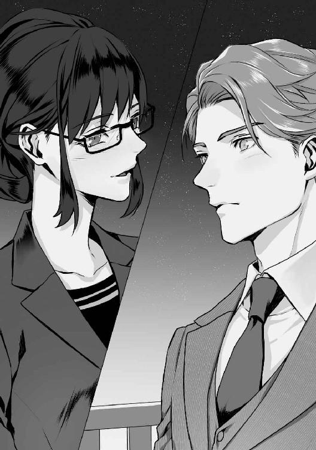
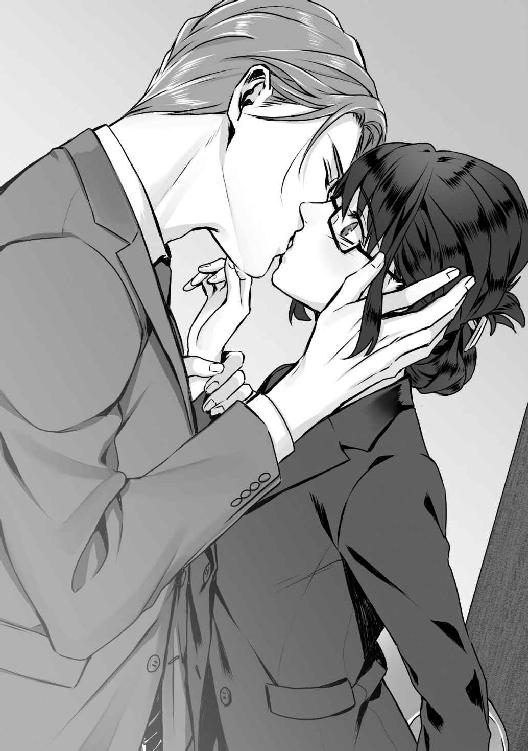
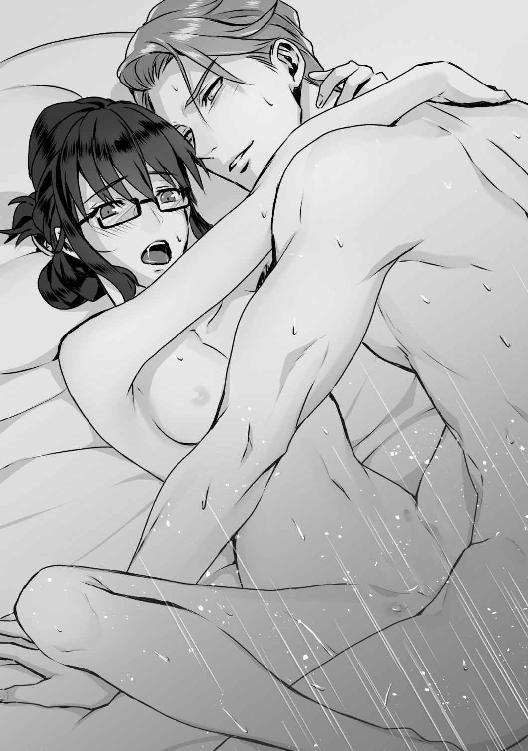

| 俺様イケメン部長は嫌われOLがお気に入り (LUNA文庫) | |
| 桔梗 楓 | |
| 天海社／LUNA文庫 (2018) | |
俺様イケメン部長は嫌われＯＬがお気に入り
[著者]桔梗楓
[イラスト]園見亜季
第一章 意地悪上司のプルアウト
その『抜擢』は青天の霹靂だった。
江神建設株式会社、都内支店。ホームトータル部の社員達は戸惑いにざわめき、女性社員はひそひそと話し出す。
「なんで伊沢なの？」
「愛想はないし、仕事もやりづらそうなのに」
伊沢志穗の背中に刺さる悪意のこもった視線。隠そうともしない陰口。
「伊沢、返事は？」
志穗の目の前に立つのは、半年前に本社より赴任した営業部長、真広勇だ。硬質な趣のある美貌に、つり上がった眦は妖艶な雰囲気を醸し出している。さらりと後ろに流した茶髪がよく似合っていて、背は高く、肩幅も広い。
グレーのビジネススーツを着こなす姿は非常に洗練されていた。女性のみならず、男性までも振り返らざるを得ない。真広勇はそんな男性だ。
彼は腕組みをして、どこか挑発的な笑みを見せる。
対して、志穗は苦虫を噛み潰したような顔をしていた。誰もが魅了されてしまいそうな顔も、志穗にとっては嫌悪の対象なのだ。
――どうして、よりにもよって、私が。
そう言いたくなる気持ちを、グッと飲み込む。
これは仕事なのだと心に言い聞かせ、勇を睨んだ。
「わかりました」
「よろしい。では今日から始めよう。しばらくは多忙になると思うが、頑張ってくれ」
「ご期待に添えるよう、努力します」
志穗は必要以上をしゃべらない。睨み顔は一転して無表情になり、淡々と返事をする。
伊沢志穗は真面目だけが取り柄の、地味な顔立ちをした社員だった。セミロングを後ろに束ねた髪型と黒縁の眼鏡。そしてナチュラルなメイクは、今の職場に勤めてから一度も変えたことがない。常に無表情で、愛想もなく、無駄口も世間話も一切しない。
当然、仲の良い女性社員は皆無で、男性社員からも遠巻きに見られている。
そのことを自覚している志穗は、自分を営業アシスタントに指名した男がよりにもよって、ホームトータル部で一番好感度が高い人間であることに、何の冗談だとため息をついてしまった。
江神建設株式会社は、都内有数の総合建設業――いわゆる、ゼネコンである。志穗はその大企業の都内支店で働く営業事務だ。
会議室に移動した志穗と真広は早速ミーティングを始める。
「さて、概要は先ほども説明したな。本社から都内支店に商談の依頼が来た。君は私の補佐として、主に資料集めとプレゼンボードの作成をお願いしたい。現場にも行くから、常にそのつもりでいるように」
「はい」
「それから、君はアシスタントとは別で、通常の業務も行ってもらう。つまり、普段の倍忙しくなるということだ。これはコンペ期間が短期であることが理由だが、もし、オーバーワークだと感じたら遠慮なく言ってくれ」
「はい」
仏頂面で、愛想を遙か彼方にかなぐり捨てたような返事をする。
これが、志穗の嫌われるゆえんだ。誰に対してもこうなのだが、真広に対してはより態度が頑なになる。無関心どころか嫌悪しているのではないかと噂されるほどだ。
あんなに素敵な男性なのに、なにが気に入らないのかしら。感じの悪い女。
そんな風に悪口をたたかれている。真広は仕事ができる上に、部下に対しての気配りやフォローにも長けていて、女性の人気もさることながら、男性社員からの人気も高い部長だ。そっけない志穗に対しても愛想がよいので、そんな完璧上司のなにが不満なのだと文句を言われても仕方がない。
だが、志穗は真広のそういうところが好きではなかった。そう、噂はあながち嘘ではない。志穗は真広に対して、無関心どころか嫌悪感を覚えていた。はっきり言って、真広のようなタイプは大嫌いに近いのだ。
志穗が概要書を確認していると、真広はテーブルの上で肘をつき、指を組んで形のよい顎を乗せた。唇を隠して、ジッと志穗を見つめる。
その視線に気づいて、志穗は「なにか？」と訝しげな表情を浮かべた。
真広は、ニ、と目で笑って「いや」と軽く首を横に振る。
「質問があればどうぞ」
どこか値踏みしているような視線に、志穗は渋面を浮かべる。仕事だと頭を切り替え、もう一度概要書に目を通した。
本社より任された商談とは、タワーマンションの建設受注という、とても大きなものだった。都内一等地に建っていた古いオフィスビルが解体され、その跡地にマンションを建てようというのだ。土地を所有する大手不動産会社は近日に大規模なコンペティションを行うらしい。
どう考えても、一支社が請け負うような商談ではない。ましてや、プレゼンの経験もない志穗がアシスタントに就くなんて、荷が重すぎる。
「いくつか質問します」
「どうぞ」
「まずひとつ。どうしてウチにこんな大きな話が来たんですか？ 本社にも営業はいるでしょう？」
「その答えは明確だ。本社は、支社ではなく『私』に任せたいんだよ」
真広は不敵な笑みを見せる。
志穗はようやく納得した。今でこそ『ホームトータル部・部長』という肩書きで管理業務に就いているものの、真広は元々本社の営業管理部に所属していた。そして、数々の商談を成立させては飛ぶ鳥を落とす勢いでスピード出世したのだ。三十二という若さで支店の部長に就いたのは、彼の業績を裏付けるものだった。
「では、もうひとつ質問します。......どうして、部長は私をアシスタントに指名したのですか？」
先ほどの一幕――。
真広は自分の補佐役として志穗を指名した。社内はざわめき、こんな愛想のない女がなぜ、と女性社員から睨まれたのだ。だが、その気持ちは志穗も同じだった。営業補佐として指名するなら、もっと愛想がよく見目もよい女性社員のほうが、取引先に対して好印象を持たれるのではないか。そして、真広に好意を持っている社員のほうが、仕事も円滑に進むのではないか。
真広は組んでいた手をほどき、次は片手で頬杖をついた。艶のある瞳が志穗の胸元から頭の先まで舐めるように動き、志穗はぞくりと背中を震わせる。
「な、なんですか？」
そんな目で見ないでほしい――牽制するように志穗が睨むと、真広はその瞳をゆっくりと細めた。
「君が好きだからだ」
「はっ!?」
思わず素っ頓狂な声を上げてしまう。すると、真広はクックッと笑いをかみ殺した。
「初めて伊沢のポーカーフェイスが崩れたな」
からかわれた。そう思った志穗はみるみると目をつりあがらせ、不機嫌な顔をする。
「部長。冗談はやめてください」
「冗談じゃないと言ったら？」
真広はあくまで楽しそうだ。まるで、珍しい動物の反応を見て楽しむような様子に、志穗は嫌悪をあらわにする。
「そういう受け答えは嫌いです」
はっきりと言えば、真広は「そうか」と短く返し、軽く目を閉じた。
「すまないな。君と仕事ができると思うと年甲斐もなく舞い上がってしまってね。公私混同をするつもりはないが、喜ぶくらいはいいだろう？」
真広が切れ長の瞳をうっすらと開ける。それは志穗をからかっておもしろがるようなものではなく、不思議と真剣で、志穗は言い返す言葉を見失ってしまった。
ただ、例えようもない居心地の悪さを感じていると、真広がコホンと咳払いをした。
「では、君が納得しそうな理由を言おうか。補佐として選んだのは、君が営業事務の中で最も建築知識を持っていたからだ。伊沢は元々、本社のホームハウジング部門に所属していただろう？ プレゼンボードを作るにしても、やはり基礎知識の有無は大きいからね」
真広が口にした言葉に、志穗の体は一気にざわついた。真広が自分の経歴を知っていたということに、恐怖にも似た感情を覚える。
知られたくない。本社にいた頃の自分は、隠しておきたいことなのだ。
「あ、あの。部長は、私が本社にいたときのことをご存じなのですか？」
「いや、さすがに他部署については知らないが。どうかしたのか？」
その返答にホッと胸をなで下ろした。よかった。真広は志穗が本社にいた時代を知らないのだ。
「いいえ、私からの質問は以上です」
志穗が話を切り上げると、真広は立ち上がった。そして、手に持っていた厚手のファイルを渡してくる。
「結構。この話は、本社が一年前から企画設計に着手している。設計図や外観デザイン、内装の間取り、全ての情報はこのファイルにまとめておいた。私たちの仕事は、コンペでこれらの情報をわかりやすく、かつ魅力的にプレゼンすることだ」
「......はい」
ファイルを受け取りながら、こくんと志穗は生唾を飲み込む。本社が一年前から手がけていたプロジェクト。そんな大きな仕事に、自分のような未経験者が携わるなんて......。
重責に押しつぶされそうになるが、ある意味、これはチャンスでもあるのだ。ひたすらに事務仕事をこなしていた自分が、憧れの仕事に就く、またとない機会。
ずっとこんな仕事を任されてみたいと夢見てきた。しかし、いざ仕事を目の前にすると、弱気な自分が袖を引く。私で本当に大丈夫なの？ と。
すると、ポンと軽く背中をたたかれた。
「そんな顔をするな、大丈夫だ。伊沢はインテリアコーディネーターを目指して勉強しているんだろう？ 得た知識を発揮するまたとないチャンスじゃないか」
ハッと顔を上げる。自分の心の内を読まれたのかと、驚いたのだ。
「ど、どうして、私が勉強していることを知っているんですか？」
「うちの資格取得支援制度を利用して講座に行っているだろう？ それくらいは把握しているよ」
あっさりと言われて「そういうことですか」と納得する。たしかに上司なら、部下の資格取得情報を把握していてもおかしくない。
「とにかく、私を信じて頑張ってみるといい。困ったことやわからないこと、相談したいことがあれば何でも言いなさい。君一人の仕事ではないのだからね」
そう言って真広はゆるく微笑み、ふいに志穗の頬に触れてくる。驚いた志穗がズサッと体を引かせると、真広はくすくすと笑った。
「本当に耐性がないな」
そう言って、真広は先に会議室を出て行った。残された志穗は彼に触れられた頬に手を添え、呆然とする。そしてみるみると湧き上がってくるのは、怒りにも似た対抗心だった。
真面目に仕事をしようとする人間に向かって『好き』などと言ってからかったり、ついでみたいに触れたりするなんて。
今まで自分が避けていたこともあって、真広はよく知らない人間だった。しかし、志穗は確信する。彼は間違いなく、甘い顔で女性をたぶらかすような、軟派な男なのだ。
「なによ......人のこと馬鹿にして。絶対に負けないんだから」
ファイルを両手に握りしめ、志穗は前を睨みつける。真広のような、顔がよくて軽薄な男は志穗の敵なのだ。彼に頼ったら馬鹿にされるかもしれない。この仕事は絶対に一人でやり遂げてやると、心に決めた。
志穗の仕事量は普段の倍となり、多忙さが極まった。特別手当は成功報酬として支払われると真広が言っていたため、この仕事を無駄にしないためには何としても受注を決めたいところである。
ファイルの内容を吟味し、セールスポイントを絞り込む。プレゼンの時間は限られているので、重要な要点のみを拾い出さなくてはならない。
通常業務の間を縫って企画書を読み込み、データ化する。昼食もオフィスで済ませ、仕事に打ち込む日々を送っていた。
そんなある日、志穗が黙々とスライドのデータを作成していたところ、後ろから声が聞こえてきた。
「あのさあ、あんたの『私、仕事してます～』みたいな態度、私らへの当てつけなの？」
「真広部長に抜擢されたからって、気合い入れすぎで引くよね～」
声を聞くだけでわかる。志穗の後ろで文句を言っているのは同じ部門の同僚だ。真広に夢中な二人なのだが、彼に対してそっけない態度を取る志穗が気に入らないらしく、ことあるごとに悪口を言ってくる。
そのことにも志穗はもう慣れていた。彼女たちの言葉を無視して、黙々と仕事を続ける。ムキになって言い返したこともあったのだが、そのときは火に油を注ぐような口論となってしまい、収拾がつかなくなって真広に注意されたことがあるのだ。それ以来、志穗は彼女らを相手にしないようにしている。
いつもなら、後ろで文句を言うだけ言って、反応のない志穗を馬鹿にして去っていく同僚たちなのだが、今日は違うようだった。余程、真広が志穗をアシスタントに選んだのが気に入らないのだろう。
「ちょっとあんた。いい気になってんじゃないわよ。仕事ができるからって、そんな態度でいいと思ってるわけ!?」
一人にグイッと椅子の背もたれを引っ張られて、志穗は椅子からずり落ちてしまった。もう一人も志穗のデスクにあったマグカップを掴むなり、中に入っていた紅茶をぶちまけてくる。
「熱っ！」
思わず顔を手でかばうも、頭の先からスカートまで紅茶まみれになってしまった。
「調子に乗ってんじゃないわよ。地味で可愛げもない女。営業部のみんなが、あんたのこと根暗女って呼んでるんだからね」
「早く辞めればいいのに。あんたは、もっと暗くてジメジメした職場がお似合いよ」
頭ごなしに怒鳴られて、志穗はうつむく。今は昼休みで、オフィスには自分たち以外誰もいない。むしろ、同僚たちはそれを狙って来たのだろう。愛想のない志穗が嫌がらせを受けていることは、皆も感づいている。ただ、見て見ぬふりをしているだけだ。取り立てて助けたいと思うような魅力が志穗にはないからだ。
どうして、こんな風になってしまうのだろう。
志穗が唇をかみしめたとき、ガチャリとオフィスの扉が開いた。
「ずいぶんと威勢のいい声が聞こえてきたが。また君たちか」
はあ、とため息をついて現れたのは真広だった。まさか彼が来るとは想像していなかったのか、同僚たちは慌てだす。
「真広部長！ 今日は外出だったんじゃ......」
「朝から本社に呼ばれていただけだ。ところで、その惨状は君たちがやったのか？」
ジロリと真広が同僚たちを見る。
「ち、違います。これは伊沢が勝手にやったことです」
「私たちは拭いてあげようとしているところなんです」
次々と言い繕う同僚たちに、真広は不愉快そうな表情を浮かべた。
「早く辞めろとか、調子に乗るなとか、いろいろと聞こえていたな。君たちが伊沢に嫌がらせをしているのは、すでに報告を受けているんだぞ」
静かに怒る真広に、同僚たちは互いに目を合わせ、ばつの悪い顔をしてうつむいた。
「だって、伊沢が真広部長のアシスタントだなんて」
「馬鹿！」
一人が呟いたところで、もう片方が肘鉄を入れた。
「私の選択が間違っている――君たちは、そう言いたいのか？」
「違います！」
「では、なにが不満なんだ。伊沢は毎日真面目に仕事をやっているぞ。仕事量が増えても、文句ひとつこぼさずにな」
淡々とした真広の言葉に、同僚たちは何一つ言葉を返せない様子だ。志穗は無愛想で態度もそっけないが、仕事だけは真面目に取り組んでいるのだ。
そして、会社とは、仕事をする場である。
「何度か、私から注意をしたこともあったな。それでも改めないのなら仕方がない。後日、君たちには本社から厳重注意がいくだろう」
「そんな！」
女性の一人が声を上げる。本社から注意を受けるということは、彼女らのキャリアに傷がつくということだ。直接の減給には繋がらないものの、非常に不名誉なことであり、昇級にも影響が出る。
たかが嫌がらせでと思っているのだろう。だが、真広は辛辣だった。
「自分の行動がいかに稚拙か、よく考えることだな。伊沢、現場に行くぞ」
「は、はい」
志穗は立ち上がると、ビジネスバッグにノートパソコンとファイルを仕舞い、真広の元へ走る。
彼は足早に廊下を歩きだし、志穗も続いた。
「伊沢、なにかあれば相談しろと言っただろう」
「......仕事には関係ないことだったので」
そっぽを向いて答えると、彼はエレベーターの前でぐるりと振り返る。
「その『なり』で、仕事に関係ないだと？ 本当にそう思っているのか」
改めて志穗は、自分の状況を自覚した。頭からつま先まで紅茶で濡れていて、特にタイトスカートがひどい。こんな姿で現場に行くことはできないだろう。
「すみません。ロッカーに替えがあるので、着替えてきます」
チン、と軽快な音が鳴り、エレベーターの扉が開く。乗り込むと、真広は黙ってロッカールームのあるフロアの階数を押した。
「伊沢。これは君だけの問題ではなく、社内の風紀に関わるんだ。だから、今後なにかされたときは必ず報告するように」
「......はい」
沈んだ声で返事をする。
こんなつもりではなかった。『ここ』では、もっとうまく立ち回るつもりでいたのだ。余計なことを言わず、真面目に仕事さえすれば、何のトラブルも起こらないと思っていた。それなのに、志穗にとって現実はこんなにもうまく生きることができない。
真広がため息をつく。自分に対する落胆と感じ取った志穗は身を固くした。
「もっと、私を頼ってくれ」
思ってもみなかった言葉に「えっ」と志穗は顔を上げる。真広は真剣な面持ちで、志穗を見つめていた。
「伊沢自身になにか理由があって、無表情と無関心を貫いているのはわかる。だが、仕事は君一人で動くものではなく、また、君一人で成し遂げるものでもない。そうだろう？」
だから頼れと真広は言い、くしゃりと志穗の頭を撫でた。
じんわりと、撫でられた頭に熱がこもった。志穗の頬にほんのりと赤みがさす。
真広と仕事を始めた当初のイメージは悪かった。しかし、この人は悪い人ではないのかもしれないと思い始める。
だが、志穗は頭を横に振って、その考えを打ち消した。もう期待したくない。信じたくない。こんな風に言っておいて、あとで蹴落とす腹づもりかもしれないのだ。彼は人をからかうのが好きなようだし、その可能性は拭えない。
もっとしっかりしなければ。志穗はそう心に言い聞かせ、ロッカーで手早く着替えを済ませると、真広と共に現場へと向かった。
タワーマンション建設予定地は、まだ古いオフィスの解体工事中だ。真広と志穗は安全第一と印字されたヘルメットを被り、不動産会社の責任者と打ち合わせをした。話を手早く済ませて車に戻ると、真広が難しい顔をして、腕を組む。
「伊沢、君が作成したプレゼン概要を見せてくれるか？」
はい、と返事をして、志穗はファイルを鞄から取り出して渡す。しばらく書類をめくっていた真広は、考え込むように顎に指を添えた。
「伊沢。この概要では契約が取れないぞ。先ほどの責任者の話を聞いていたか？ 今回の建設計画、重視されているのはなによりも高級志向とそれによる特別感なんだ。なのに、それについてのスライドがあまりに少ない。私は高級感を推せと提案しただろう？ どうして増やさないんだ」
「それだけでは他の会社と変わらないプレゼンとなり、埋もれてしまうと思ったからです。江神建設独自技術による耐震効果も重要なアピールです」
ムッとしながら志穗が反論する。
都内中心街に建てられるタワーマンション。商談のゲストである不動産会社からは、エントリーモデルよりもハイクラスを重視したいと、ファイルにあった要望書にも書かれていた。コストはできる限り低く抑えつつも、高給所得者に狙いをつけた魅力ある外観と、セレブリティのある内装。今回のコンペは、なによりもそれを重視するらしい。
だから競合会社はこぞって高級さを訴えるプレゼンをしかけてくるだろう。それゆえに、志穗は江神建設会社だからこその唯一感のあるプレゼンテーションを作りたいと思った。
だが、真広は渋面を浮かべ、額を抑える。
「君の主張は間違ってはいない。だが、あまりに、ゲストの要望からかけ離れている。今回のコンペは、耐震強度や耐久性能についてはそこまで重視されていないんだ。というより、その程度は当然のことだと踏まえている。その上でのハイクラスさが必要なんだ」
真広は決して頭ごなしに怒鳴ったりはしない。ただ、静かに叱るその声が志穗の心を深く抉った。彼から返されたファイルを見つめ、うつむく。
居住空間において、一番大切な要素は安全だ。どんなに見た目がきらびやかでも、ハリボテでは話にならない。どの企業よりも頑丈な建物が建てられる――その信用度の高さを志穗は提案したかった。だから徹夜も同然でマンションの耐久度を計算したり、間取りの柱の数から耐震強度を測って、グラフにもした。
しかし、躍起になって仕事をしながら、心のどこかでわかってはいたのだ。
自分は真広への対抗心から、あえて彼の提案を無視し、自分の主張だけを重視したプレゼンボードを作成していた。自分一人の力でも立派なプレゼンテーションにしてみせる。そんな気持ちで仕事に打ち込んでいた。
癪だったから。真広に負けたくないと思ったから。
ぎゅっとファイルを握りしめていると、そんな志穗を真広はジッと見つめてくる。視線を感じて顔を上げると、彼はふいにニヤリと笑った。
「本当に、君は仕事にひたむきなんだな」
「えっ」
「なにも考えず、ただ私の言うことを聞いていれば無難な仕事ができるというのに。だが、そういうところがとても魅力的だよ。負けず嫌いで、怖いもの知らずなところもね」
頬を、そっと親指で撫でられる。
びくっと志穗の体が震え、衝動的に体を引かせた。車内という密室の中で、ばくばくと志穗の心臓が早鐘を打つ。
「なっ、な、なに、を」
この男は危険だ。頭の中でシグナルが光る。
ナンパといった軽薄なものではない、直接的な身の危険を感じるのだ。いきなり襲いだすような男性ではないだろうが、油断すると心の底まで暴かれてしまいそうな恐ろしさがある。
さながらおびえる小動物のように、警戒心いっぱいの目で真広を睨んでいると、彼は「うーん」と困ったように頭を掻き、運転席に座り直してハンドルを握った。
「うまくいかないなー」
「なにがですか」
不遜なつぶやきに志穗がツッコミを入れると、彼は「いや」と言って首を横に振った。
「そうだ、伊沢。今日の夜は空いているか？」
「夜ですか？ ええ、特に予定はありませんが」
プレゼン概要を練り直せと、残業を言い渡されるのだろうか。そんなことを考えながら志穗が答えると、真広はどこか弾んだ声で「そうか」と言った。
「では、伊沢。今日は私と飲みに行こう」
「はっ？」
唐突な誘いに、志穗の目が点になる。この上司は時々思ってもみないことを口に出すから、頭の思考がついていかないのだ。車を運転しながら、真広が機嫌よく話す。
「ディスカッションだよ。職場から離れたほうが、思いがけないアイデアを思いつくこともある。ここらでひとつ、互いに意見を交わし合おうじゃないか」
「つまり、仕事の一環としてお酒に付き合えということですか？」
「残業手当は出ないけど、おごるよ？」
茶目っ気のある瞳でチラと横目で見てくる。はあ、と志穗はため息をついた。
「お酒を飲む場で残業手当が欲しいなんて言いませんし、おごってもらわなくても結構です。......わかりました。あくまで仕事の話をするだけでしたらお付き合いします」
ツンとすまして、かけていた眼鏡のブリッジを指で押す。
「決まりだな。夜が楽しみだ」
そう言って、何食わぬ顔で車の運転を続ける真広を横目に見て、志穗は密かに、もしかして自分は大変な墓穴を掘ってしまったのだろうかと不安になった。
オフィス内に就業時間を知らせるチャイムが鳴り、社員は各々片付けを始める。
志穗はてきぱきとデスクを整理し、足早に会社を後にした。
真広とは駅前で待ち合わせをして、そこから食事に向かう予定だ。
仕事の話をするだけ。心を許すつもりもない。
場の雰囲気に流されてはいけないと自分に言い聞かせる。そう、もう二度と、男性の甘言に騙されたくはないのだ。
「流されない。仕事の話だけに集中する。仕事なんだから......」
「仕事がどうかしたのか？」
「ひゃ!?」
駅前で突っ立っていると、突然後ろから声をかけられて飛び上がる。
慌てて振り向くと、そこに立っていたのは真広だった。志穗は視線を挙動不審にさまよわせながら、パッパッと服の裾をたたく。
「な、何でもありません。仕事に行きましょう」
「仕事って。飲みに行くんだろう？」
「お酒を飲みながら、仕事の話をするんですよね？」
念を押すように志穗が言えば、真広はクックッと肩を揺らして笑った。
「ああ、そうそう。その予定だ。――いや、伊沢。人を犯罪者かなにかのように見るんじゃない。本当に話すだけだよ。今日はね」
「今日は？」
ひくっと志穗の唇の端がひくついた。やはり、彼と酒を飲むのは断るべきだっただろうか。
しかし、今さら回れ右するわけにもいかない。
真広が志穗を連れて入ったのは、アットホームな雰囲気のある、住宅型の店だった。開放感のあるテラス席から木々に囲まれた庭が広がっていて、カウンター席の裏にあるキッチンではコックの料理する姿が見えている。中を覗くとフランベした炎が勢いよく舞っていた。
「ここは、どういったお店なんですか？」
「鉄板焼きの店なんだが、特に焼き鳥がおいしくてね。俺のお気に入りなんだ」
ふわりと鼻孔をくすぐるのは、肉を焼くおいしそうな匂い。焼き鳥というワードに、志穗の腹がきゅううと空腹を訴え、生唾をこくりと飲み込む。仕事帰りということもあって、志穗の腹はずっと臨戦態勢なのだ。
しかし、それはともかく、いつの間にか真広の一人称が変わっている。
「あの、今、自分のこと『俺』って言いましたか？」
「ああ。オフのときくらいは自由に喋らせてくれ」
軽く真広が笑う。ただ一人称が『私』から『俺』に変わっただけなのに、一気に真広との距離が縮まった気がして、志穗は身を固くした。
騙されない。あくまで仕事の話をするのです。
何度も自分に言い聞かせ、つとめて冷静な無表情を維持し「そうですか」とそっけなく返す。すると、真広はなんてことない様子で話しかけてきた。
「さて志穗、焼き鳥は好きか？」
「げほっ」
思わず咳き込み、体がよろけた。無表情は驚愕の顔で形無しになり、真っ赤になって「な、な、な」と声を震わせる。
「ななな、なんで、私のこと呼び捨てにっ!?」
「オフのときくらい、名前で呼びたい」
「嫌ですっ！ お断りします！」
自分と真広はあくまで上司と部下だ。馴れ馴れしいにも程があるし、名前呼びだなんて距離が近すぎる。志穗は全力で拒否をしたが、真広は全く動じない。
「いいじゃないか呼び方なんて。それとも、志穗は名前で呼ばれると困るのか？」
「こ、困ります」
「では、理由を教えてもらおう。俺がその理由で納得すれば、やめてやる」
なぜこんなにも真広は偉そうなのだ。いや、彼は上司だから偉そうにしていてもおかしくないのだが、就業時に比べて格段に傲慢不遜だ。志穗は「理由、理由」とブツブツつぶやき、キッと顔を上げた。
「とっ、友達みたいで嫌です」
「ああ、それは安心しろ。俺たちは友達じゃない」
「そうですよね。だから、呼び捨ては」
「......もっと深い仲になりたい関係だ」
唐突に甘く囁かれ、志穗はズサッと後ろに飛び退く。まただ。会議室で真広に囁かれたときと同じだ。
なぜ自分を選んだのか――その理由を問うたとき、彼は今と全く同じ口調で言ったのだ。
『君が好きだから』と。
一体なにを考えているのだ。どこまで本気なのか。頼むから人をからかうのはやめてほしい。
「しっ、しっ、しごとのはなし、するんですよね!?」
「ああ、そうそう。仕事の話をするんだったな」
今思い出したように、真広がぽんと手の平を拳でたたく。わざとらしい。
「早く行きましょう。そして、仕事の話をしましょう。真広部長」
「仕事じゃないときに役職で呼ぶのは止めてくれないか」
「......真広さん」
「できれば勇と」
「ま、ひ、ろ、さん」
いい加減にしろと、志穗の目が据わる。これ以上ふざけたら回れ右して帰ってやると思っていると、真広が「やれやれ」と首を横に振った。
「なかなかうまくいかないものだなー」
「なにがですか？」
「いや。怒る志穗はたまらなく可愛いが、そろそろやめておかないと嫌われてしまいそうだから、おとなしく席につこう」
すたすたと真広が店の奥に入っていく。志穗はぶすっとした顔で彼の後ろに続いた。
スタッフに勧められた席は、テラス席だった。木製の丸いテーブルの真ん中にはキャンドルが立てられていて、ふんわりとあたりを照らしている。初夏である今の季節は、外の席でも心地がよい。庭にもあちこちに照明が点いていて、白いハナミズキが可憐に花を咲かせていた。
「......素敵なお店ですね」
「隠れ家的なところに、人気の秘訣があるようだ。志穗、酒はどれを頼む？」
真広がメニューを渡してくる。堂々と名前を呼んでくるところに少々ムッとするが、ここで再び押し問答するのも虚しいと思い、志穗は黙ってメニューを受け取った。
「実は、お酒はあまり詳しくないんです」
「たしかに志穗は飲み慣れてない感じがするな。じゃあ、俺と同じものでいいか」
志穗が「はい」と同意すると、真広はスタッフを呼び、酒と焼き鳥の盛り合わせを注文した。しばらくすると、お通しと酒が運ばれてくる。それはしゅわしゅわと炭酸の泡が見える、黄金色の酒――志穗には、それがビールに見えた。
「では、乾杯しようか。俺と志穗のめでたい幸せを願って」
「真広さんはお酒を飲む前から酔っ払ってるんですか？」
「おっ、手厳しい。普段の志穗は割と辛辣なんだな」
クスクスと真広が笑う。どんどん志穗の目がつり上がっていくのを見て、彼は「いや、すまない」と横を向いて謝った。
「君の無表情を崩すのがこんなに楽しいとはね......。加減が難しいものだ。では、プレゼンの成功を願って、にしようか」
「それでいいです。あと、人をおもちゃにするなんて、悪趣味にも程がありますよ」
「おもちゃになんてしていない。俺は、君のいろいろな表情を見たいだけだよ。乾杯」
かちんと、一方的にグラスを当ててきた。志穗は不機嫌な表情のまま「乾杯」とつぶやき、こくりと酒を飲んで喉を潤す。だが、口に入り込んできた酒があまりにおいしくて、志穗は目を丸くした。
「これ、おいしいです。ビールじゃないんですか？」
「フレーバービールなんだ。スパイスやフルーツで香りをつけてあるんだよ」
たしかに、ゆずの香りがのど越しの爽快感を増し、後味に軽くスパイスの風味がする。こんなビールもあるんだと志穗が感心していると、焼き鳥がテーブルに置かれた。香ばしい炭火の匂いがたまらなく食欲をそそる。
真広が一本串を取ったのを見て、志穗も串を取った。肉の厚みは普通の焼き鳥よりも一回り大きい。とても食べ応えがありそうで「いただきます」と言ってからぱくっと頬張った。
「んっ、おいしい！」
焼き鳥は塩味だった。その塩さえもこだわっているようで、しょっぱさの中にほんのりと甘みを感じる。こんがりと焼かれた焼き鳥はじゅわりと脂を含んでいて、かみしめるごとに鶏の旨みが溢れ出た。それらを流し込むようにフレーバービールを飲めば、さっぱりとした味わいに、もう一本と手が伸びてしまう。
「ふわあ、おいしい。おいしい」
不機嫌な顔がみるみるとろけて、自然と笑みがこぼれてしまう。語彙力を完全になくしてしまった志穗は、腹が幸せに満ちていくのを感じた。しかし、ハッとして我に返る。
目の前では、真広が食事の手も止めて、ジッと志穗を見つめていた。
「すっ、すみません！ えっと、仕事の話を、しましょう」
コホンと咳払いをして、食べ終わった串を竹筒の中に入れていると、真広はフ、と目を細めて微笑んだ。
その笑顔は、志穗が思わず見とれるほど優しくて、目を丸くしてしまう。
「そうだな」
静かにそう言って、真広はスタッフを呼び、次はバーニャカウダを注文した。
「志穗は、俺があの支店に来た頃を覚えているか？」
ふいに問われ、新しい焼き鳥に噛みついていた志穗は「んっ？」と顔を上げる。
もぐもぐと咀嚼しながら、彼が都内支店に来た頃を思い出した。
夏の季節が過ぎ、オフィスから見える窓の景色が、秋色へ染まりかけていたある日。
人事異動で真広がやってきたのだ。部長という肩書きを携えて。
鼻筋の通った整った顔に、耳に残る艶やかな美声。本社では敏腕な営業マンだったという噂はすでに支店にまで届いていて、まわりの女性社員は一斉に華やいだ。
普通なら、他の男性社員はおもしろくないと思うかもしれない。だが、真広は違った。自分から飲みに誘い、親睦を深め、仕事外では気さくに話すことができる。相談にも親身に乗ってくれて、自分の経歴をひけらかさない。
一人、また一人と、真広に心を許す社員は増えていって、今や支店の中で最も欠かせない上司となっている。......志穗一人を除いては。
「毎日、出社してから退社するまで、志穗は一人で仕事をしていた。少なくとも俺にはそう見えた。周りは皆、遠巻きに君を見ていて......どうしてだろう、と思っていたよ」
フレーバービールをこくりと飲み、真広が話す。志穗が黙って聞いていると、スタッフがバーニャカウダをテーブルに置いた。
「俺はね、志穗が自分の周りに厚い壁を作っていて、誰も近寄らせないようにしているんだと気づいた。単なるコミュニケーション能力の足りない社員かと思えば、君は仕事だけは誰よりも真面目で、真剣にこなしていた。......それが印象的だった」
真広がカットされたキュウリスティックを手に取り、バーニャカウダに浸してから食べる。カリッと小気味良い音がした。
「お高くとまっているんじゃない。周りを見下しているわけでもない。志穗はいつも、孤高に見えて寂しそうだった。毎日懸命に孤独を貫いているように見えた」
誰に対してもそっけなくて、職場に仲のよい人は一人もいない。常に無表情で、淡々と仕事だけをこなす。まるでそれしか知らないロボットのように、毎日変わらず、同じ業務を繰り返す。だから、志穗は嫌われていた。愛想がなくてつまらない人間だと、誰一人として志穗に近づく人はいなかった。
志穗自身、そんな自分でありたいと望んでいたのに――。
「私は、そんなに寂しそうに見えていたんですか？」
野菜スティックを取る。バーニャカウダをトロリとつけて、口に入れる。
真広はグラスを片手に、軽く笑った。
「どうだろうな。むしろ俺がそうだったらいいと望んだから、そう見えたのかもしれない」
カリカリとセロリを食べながら、志穗が「どういう意味ですか」と首を傾げる。
「君が寂しさを感じていたなら。俺がその寂しさを埋めることができるだろう？」
薄く目を細め、志穗を見つめる。その視線は熱を帯びていて、ひどく艶めかしい。
そんな彼をジッと眺めて、志穗は思わずため息をついてしまった。
「さすがに呆れてしまいます。真広さんは随分と自信家なんですね」
「ああ。よく言われるよ。でも、大口をたたくだけの努力はしているつもりだ」
キャンドルの鈍い光に照らされた真広は、真剣な顔をしている。彼が口にしたことは冗談ではないと察し、志穗はうつむいた。顔が赤くなっていることを知られたくない。
「志穗」
名を呼ばれ、顔を上げる。どうしてこの人はこんなにも、自分に真摯なまなざしを向けてくるのか。意識しないように努力していても、心が揺り動かされてしまう。
「君が心の中でなにかを抱えているのはわかっている。それを言いたくないというのもね。だから、せめて仕事のときだけは、俺を頼ってほしい」
「真広さん......」
志穗はたしかに、誰にも言いたくないことを心に持っていた。それが原因で、今のような『自分』を作っていると自覚している。
なにも言わない自分を理解してほしいなんて思ったことはない。だが、こうやって誰かに自分の苦しみを言い当てられると、心の扉が開きかける。隙間から、するりと真広が入ってこようとする。
志穗は、自分の心を守るかのようにギュッと胸元を掴んだ。そんな彼女を、真広は静かに見つめている。
「志穗、この仕事は、なんとしても成功させよう」
その言葉に、志穗は目を見開く。
「君はね、もっと自信をつけるべきだ。大きな仕事を達成するということは、なににも替えがたい、自分への誇りに繋がると思うから」
自信や誇り。そんなものはなかった。
真面目に仕事をする。それだけを徹底するのが精一杯だった。
「俺は志穗を応援したい。頼るというのは、能力で負けたわけじゃないんだ。君がまだ知らないことを俺が補填しているだけ。――俺を、有意義に利用するんだ」
利用。それは、志穗にとってつらい言葉だった。でも『今回』は、自分が利用されているのではない。真広が自ら自分を使えと言ってきたのだ。
そんな風に言ってくれる人なんて、いなかった。
志穗は、今まで利用される側の人間だったのだ。それが嫌になって、今の無関心と無表情を貫いている。誰とも関わらなければ、自分が利用されることもないから。
真広の言葉が不思議と心に染み入る。
「......利用する、という言葉は、大嫌いです」
ぽつ、と志穗が話す。ぼんやりと灯るキャンドル越しに、真広の姿が見える。
「でも、真広さんの言葉は嬉しかった。だから、利用ではなく、助言を受け入れてみようと思いました」
「志穗......」
真広が心なしかホッとした顔をする。志穗は、まるで彼の表情につられたようにふわりと微笑んだ。

真広はひどく驚いた顔をする。
自分が笑顔になったことを自覚していない志穗は、首を傾げた。
「どうしたんですか？ 鳩が豆鉄砲を食らったような顔をしていますよ」
「ああ、いや」
口を手で押さえ、横を向く。手のすき間から覗く頬はほんのりと紅潮していた。
「まいったな。そんな顔をされたら、抑えられなくなる」
ふぅ、とため息をついて、気分を紛らわせるように酒を飲む。こくこくと動く喉仏をジッと見ていて、志穗は胸がドキドキと高鳴っていることに気がついた。
なんだろう。顔が熱い。まるで恋をしたときみたいに胸が痛くて、切なくなる。
志穗も慌てて酒を飲んだ。気のせいだ。酒に酔って、気分がおかしくなっているのだ。そう思い込んで、妙な気分を払い飛ばす。ついでに焼き鳥にもかぶりつく。
ちょっと優しいことを言われたからといって、すぐに胸をときめかせるなんて。自分は昔からなにも変わっていない。だから言い聞かせなければならないのだ。真広に恋をするなんて、絶対にしてはいけないことだから。
「お、おいしいですね、野菜スティック」
「君が食べているのは焼き鳥だが」
「そっ、そうでした......焼き鳥」
慌てて言い直す。星のきらめく夜のテラス席。キャンドルの光がぼやけて、自分が真っ赤になっていることをごまかせているといい。
そう、志穗は心の中で願った。
第二章 追憶のコンプレックス
結局あの日は、志穗がお金を出そうとすると丁重に断られ、ごちそうになってしまった。
後日、志穗から改めて礼を言ったものの、決して心をほだされた――ということはない。
だが、志穗は間違いなく真広という人間を受け入れ始めていた。
顔がよく仕事もできる男性というのは、得てして女性の人気が高くなる。ゆえに、女性などいくらでも替えが利くのだと、そう開き直って遊ぶ人も少なくない。だが、真広はそういった不誠実な男性ではないのかもしれない。
あの日、二人きりで酒を飲み交わした日。
真広は志穗に触れてくることはなかった。酔いに任せて、一夜を過ごす誘いもしなかった。それは一人の大人として当然の振る舞いなのだが、志穗の真広に対する認識を改めるには、充分だった。
真広は『あの人』とは、違う。
そう思えたことが嬉しかった。男なんて皆同じだという価値観に凝り固まっていた自分の心が、優しく解された気がする。
タン、と。パソコンのキーボードを打つ手が止まった。
各々の作業音が響くオフィス。黙々と仕事をしていた志穗は、ほう、と小さく息をついた。最初のファイルから見直した後、作り上げたスライドを印刷する。データをＵＳＢメモリーに保存して取り外し、印刷し終わった書類を持って真広のデスクに近づいた。
「真広部長。プレゼンボードができあがりました。こちらは、スクリーンに映し出すためのデータになります」
今日の真広は終日デスクワークだった。志穗から書類とＵＳＢメモリーを受け取るなり、立ち上がる。
「今、使える小会議室はあるか？」
「第六と、第八が空いています」
「では第六小会議室に行こう。スクリーンで映像が見たい」
そう言うなり、すたすたと歩いて行く。志穗は慌てて自分のノートパソコンを持ち、彼の後を追いかけた。
第六小会議室でスクリーンを出し、プロジェクターとパソコンを繋いで、照明を消す。
効果音と共に現れた社名のロゴ。そして、志穗の作成したスライドが映し出される。
真広は映像とプリントアウトされた書類を交互に見ながら、つぶさにチェックした。
「なるほど。合間にアニメーションが挟まれるのは意図的なのか？」
「はい。部長のタイムテーブルは、大きく分けて、高級感、安全性、江神建設の施工例の紹介です。その要点ごとにアニメーションを挟めば、聴衆は自然とスクリーンに注目します。その方が、部長もスムーズに次のプレゼンに入れるのではないかと思いました」
「ふむ。同時に、アニメーションという一呼吸が入ることで『話題が変わる』と、見る側も心構えができる。これは、君が本社にいた頃の知識を使ったのか？」
真広に問われて、志穗は少しだけ深呼吸をする。未だに古巣は思い出したくない過去なのだ。
「私は本社のホームハウジング部門に所属していた頃に、プレゼンボードの効果的な見せ方を覚えました。あと、インテリアコーディネーターの研修でも、こういったスライドの運用方法は学びましたので」
志穗が答えると、真広は満足そうに頷く。
「やはり君を選んだ俺の判断は正しかったな。安全設計のスライドも、図式が非常にわかりやすい上、簡潔にアジェンダでまとめている。これも、君が住宅建築について勉強していたからこそだ。誰でもできることじゃない」
そう言って、彼は嬉しそうに志穗へ微笑んだ。
「よくやったな」
くしゃりと頭を撫でられ、ぽっと顔が熱くなる。
「や、やめてください。子どもみたいに扱われるのは、困り、ます......」
パッと顔を背けてぼそぼそと言うと、真広にくすりと笑われた。
「よし、さっそくプレゼンテーションを本社に見せよう。細部を調整したら、あとはコンペに臨むだけだ」
「はい！」
大きく返事をすれば「いい返事だ」と、真広は目を細めた。
善は急げとばかりに、真広は本社へと問い合わせた。どうやら本社側も、真広からの報告を今か今かと待っていたようで、あっという間に段取りが組まれる。
小会議室からオフィスに戻って一時間後。志穗は真広に呼ばれて、二人で本社に赴くこととなった。
車での移動中、本社に近づくにつれ、助手席に座る志穗は緊張で体が硬くなっていく。運転をしていた真広は、ふと、彼女の変化に気づいたようだった。
「志穗、緊張しているのか？」
「い、いえ。別に。......というか、就業時間中は名前で呼ばないでください。いや、むしろ普段でも呼んでもらいたくないです」
「車の中くらい、良いじゃないか。志穗も俺のこと、気軽に勇と呼んでいいんだぞ？」
「ま、ひ、ろ、部長。真面目に運転してください」
ギロッと睨むと、真広は「おお、なかなか怖い顔だな」と肩をすくめ、のんびりと車を運転する。
――人の気も知らないで。
そんな悪態を心の中でついてしまうが、志穗は諦めたような顔をした。まだ緊張は解けていないものの、真広とのやりとりで少しは体が楽になった気もする。
そうよ。あの人はもう、本社にいないんだから。
膝に乗せた手を握る。そうだ。『あの人』はいない。それだけは確かなのだから、こんなにも怖がる必要はないのだ。
本社に行って、プレゼンテーションをチェックしてもらって帰る。それだけの話なのだ。
車は都心にあるビジネス街へと移動し、江神建設本社に到着した。
奇しくも、真広と志穗の古巣である。
お互いに本社勤めをしていた頃、そういえば真広には一度も会ったことがなかったな、と志穗は思った。もしかしたら、廊下のどこかですれ違ったことくらいはあるのかもしれない。
「懐かしいか？」
真広が尋ねてきた。志穗は黙って首を横に振る。
「いいえ。恩のある上司はいますが、私は今の職場のほうが好きです」
「へえ、そうなのか。意外だが、支店の部長をやっている身としては嬉しいな」
そう言いながら、真広は車をガレージに停めた。志穗は常に仏頂面なので、支店で働くことを楽しんでいるようには到底見えないのだろう。
たしかに、感情を封印していることでやりづらいと思うときはある。同僚の嫌がらせは、その最たる例だ。
「仕事は好きなんです。やりがいも感じています」
「なんだ、そんな理由か」
少しガッカリした様子で真広はシートベルトを外し、車を出る。志穗も下りて、彼の隣に並んで歩いた。
「仕事が理由では、だめなんですか？」
「だめなことはないが『今の職場には俺がいるから』って理由だったら嬉しかったのにと思ったんだ」
拗ねた様子の真広に、志穗は呆れた顔をする。
「ほんっと、真広さんって自信家ですね」
「あ、今、部長じゃなくて、真広さんって呼んでくれたな」
ひょいと体を傾けて、志穗の顔を覗き込んでくる。ハッと気づいた志穗は、肩掛け鞄を握ってプイと横を向いた。
「ぶ、部長のノリにつられちゃったんです。会社ではやめてください！」
「はいはい、会社ではね」
クスクスと笑って真広が歩いていく。志穗は唇をとがらせ、小走りで彼の後ろを追いかけた。
そのときにはもう、車の中で感じていた緊張は、すっかりなくなっていた。
本社には様々な部署があり、その種類は支店を大きく上回る。真広はロビーに入ると、機械に社員証をスキャンし、エレベーターに乗った。そして目的の階数ボタンを押す。
営業管理部のあるフロアの廊下は左右正面と伸びていて、さらにその先にも枝分かれしており、壁に貼られていた案内板に、無数の部署名が記されていた。
「思い出しました。私がここに入社したとき、はじめに覚えろと言われたのは、自分が所属するフロアの場所だったんですよ」
「俺も新入社員の頃に、全く同じことを言われたな」
笑いまじりにそんな思い出話をしながら歩き、営業管理部にたどりついた。真広の古巣だ。
志穗は緊張しながらオフィスに入ったが、真広は全くの自然体で、気さくに元同僚や元上司と話をしていた。彼は部長という役職に昇格した上での支店移動だったので、栄転のような扱いなのだろう。ゆえに、皆は真広を好意的に歓迎しているのだ。
そのことに志穗はほんの少しの羨望を覚えた。しかし、羨んでも仕方がない。志穗は気持ちを切り替え、彼が指示するままにプレゼンテーションの説明を始める。
その結果、志穗の仕事は大きく評価された。これなら任せても大丈夫だと太鼓判を押してもらったのだ。設計部から安全設計のスライドについて少し指摘があったが、その場で直せる程度の訂正で済んだ。
最後に「頑張れよ」と本社の人に肩をたたかれ、二人はオフィスを後にする。
仕事に対する手応えとしては充分すぎる程だった。
うまくいきすぎて、逆に怖いくらいだ。
エレベーターホールに向かって歩きながら志穗がそう思っていると、真広が軽く頭を撫でてきた。
「君の仕事に対する評価は、正当だったよ。だから『おだてられているのかもしれない』なんて顔をするな。むしろ、営業管理部の奴らは仕事に対してとても厳しいんだ。支店の営業を指導するのも管理部の仕事だからね」
「......じゃあ、あのプレゼンテーションは、本当に満足のいく出来だった、ということなんですね」
志穗が顔を上げて聞けば、真広は大きく頷く。
「ああ、完璧だよ。あとはコンペで俺が契約を取るだけの話だ。楽勝だな」
「い、いや、それが一番大変なのではっ？」
志穗が慌てて反論するが、真広はカラカラと明るく笑うだけだ。
「ここまで志穗が頑張ってくれたんだ。俺が失敗するとでも？」
「その自信は一体どこから来るんですか！ あと、社内で名前を呼ぶのは！」
「......志穗？ 志穗か？」
エレベーターホールにさしかかったころ。唐突に後ろから呼ばれた自分の名前。
志穗は身がすくんだ。
――こんなにも、久しぶりなのに。
身体が震えてしまうほど、その声を忘れることはない。
真広が不審そうに後ろを振り返る。そして志穗も、ゆっくりと後ろを向いた。
人違いでありますようにという願いは、すがる間もなく散って消える。
そこに立っていたのは、顔の造りがやたらと整った、少し軽薄な印象を持つ長身の男性だった。真広よりもずっと明るい茶髪は、染めているのだと志穗は知っている。
笑うときに垂れた目が糸みたいに細くなるのも、ふとした拍子に髪をかき上げるのがクセなのも。すべて、あの頃のままだ。
彼を目にしたことで、思い出したくもなかった過去がよみがえる。
つらくて悲しくて、どうしようもなく――愚かで。自分の馬鹿さに吐き気がした過去。
「遠矢......さん」
志穗がつぶやくと、遠矢と呼ばれた男は嬉しそうに笑った。
「ああ、やっぱり志穗だ。お前、雰囲気が前と全然違うから別人かと思ったよ。その地味な格好は何だ？ 前も眼鏡なんてかけてたか？」
気さくに話しかけながら、こちらに近づいてくる。志穗が後ずさりをしたとき、自分の前に影が入った。
「失礼。あなたは誰でしょうか。うちの志穗と知り合いですか？」
横から入り、志穗の前に立ったのは真広だった。彼の大きな背中で、遠矢の姿が完全に遮られる。
「はあ？」
冷静な真広に対して、遠矢は一気に不機嫌な声を出した。
「あんたこそ、誰だよ」
「私は、都内支店の真広です。志穗の上司ですよ」
「真広？ ......あんたがそうなのか。営業管理部でスピード昇格した凄腕だと噂されていたな。俺が日本にいた頃、真広なんて名前は全く聞かなかったのになあ」
皮肉げに笑う。そして、遠矢は一転して不機嫌そうに声を荒げた。
「どけよ。俺は、志穗に話があるんだ」
「あなたに名前を呼ばれてから、明らかに志穗の様子がおかしい。私が、そんな人間と会話をさせるとでも？」
「関係ねえよ。大体あんたも、部下を名前で呼ぶとかおかしいだろ。それともなにか。あんたと志穗はただならぬ関係なのか？ なあ、志穗。『次』は、こいつなのか？」
これ見よがしに『次』という単語を強調する遠矢の言葉に、志穗はぐっと奥歯をかみしめた。そのとき、真広の低い怒声が耳に響く。
「――志穗、志穗と、気安く呼ぶな。お前が気安く呼んでいい女じゃない」
真広の怒りに遠矢は少しひるんだようだった。真広は志穗の手首を握り、エレベーターのボタンを押す。扉はすぐに開いて、志穗たちはエレベーターに乗り込んだ。
ホールに残された遠矢は、真広の後ろに隠れる志穗をジッと見つめる。彼のねっとりとした視線を感じて、ぎゅっと身を固くした。
「なあ、志穗」
ニヤ、と遠矢が笑う。はやく閉まってくれと、志穗はエレベーターの扉を見つめた。
「今はそいつの言いなりになっているのか？ ......俺のときみたいに」
ガコン。重々しい音を立ててエレベータが閉まる。
志穗はずっと黙ってうつむいていた。
よりにもよって真広が側にいるときに、遠矢に会ってしまうなんて。一番知られたくない人だった。もう二度と会うことはないと思っていたのに、まさか再会してしまうなんて。
地上階に降りたエレベーターの扉が開く。のろのろと社屋を出て、真広と共に駐車場へ向かう。
しばらく、互いに無言だった。
コツコツと、互いの足音だけが聞こえる中、ふいに真広が足を止める。
「志穗。今夜、空いてるか？」
くるりと振り返ってきた真広はひどく真剣な表情をしている。十中八九、彼は遠矢と自分の関係を聞きたいのだろう。言いたくない志穗は、彼から視線をそらした。
「今夜は、その、用事が」
「なら、今から二人きりで話せる場所に向かおう」
「えっ、今は就業時間中ですよ？」
「休憩時間にする。社内で仕事をしていても、時々休憩を取るだろう？」
「そ、そんなめちゃくちゃな......」
思わず呆れた表情になってしまうが、それでも真広は真面目に志穗を見つめていた。
「頼む、志穗」
「うっ......」
志穗はうろうろと視線をさまよわせる。
本当はとても言いたくない。だが「頼む」だなんて、そんな言い方はずるいと唇を噛んだ。真広は興味本位で聞きたいわけではないと、表情でわかってしまったからだ。
彼は本当に志穗のことを心配して、事情を聞きたがっているのだろう。どこか悲痛に見つめるその瞳は、一度正面から見てしまうと、そらせなくなりそうで怖い。だが、一体なにが怖いのだろう？
『また』、すがりついてしまいそうだから？ 頼ってしまうのが怖いのか。
信じて、また、裏切られたら。今度こそ心が壊れてしまう。だから真広に話すのが怖いのだ。
「志穗、俺を信じろ」
まるで心にくすぶる不安を読まれたみたいに、真広が言う。志穗は顔を上げてしまった。目の前には真広がいて、志穗の肩を掴み、じっと見つめている。
予想したとおりで、視線がそらせない。
どうして、そんなにも私に対して真剣になってくれるの？ 困惑と同時に、嬉しいと思う気持ちが顔を出してしまうからやめてほしい。
弱い自分は嫌いなのに。だから、無表情と無関心という殻をかぶって守っていたのに。
――でも、それでも。
「仕事......がまだ、ありますから。帰りに、少しだけ......なら」
ああ、頼ってしまった――。
志穗は自己嫌悪に落ち込んでしまう。こんなにも頑張ってきたのに、真広から逃げ出すことができなかった。根拠はなにもないのに、この人は信じられる人だと本能が訴えたのだ。
真広は安堵したように息をつくと「わかった」と了承する。
ふたりは退社後に待ち合わせを約束して、車で支社に戻った。
午後六時、志穗よりも少し遅れて真広が駅前に来た。
そして、彼が志穗を連れて行ったのは、表通りから外れた、側道に面するバーだった。世間と隔絶されたように静かな店内。暖かみのある電球で照らされていて、カウンターとテーブル席がある。
「マスター、奥の部屋は空いているか？」
真広がカウンターに声をかけると、床下で作業をしていたのか、ヒョコッと壮年の男性が顔を出した。
「ああ、アンタか。空いてるけど、妙なことするなよ」
「するかよ」
真広が肩を落として呆れた顔をする。どうも真広とバーのマスターは顔なじみらしい。
ドリンクを注文した後、志穗たちは奥の部屋に通される。そこは、まるで密会が前提のような部屋になっていて、窓もなかった。丸いテーブルと椅子があって、壁にはセンスのよい絵画が飾られている。
「もしかして、真広さんはここに女性を連れ込むんですか？」
志穗が尋ねると、真広がガクッとよろける。
「人聞きの悪いことを言わないでくれ。ここは、仕事の打ち合わせに使っているんだ。本社の役員や取引先の重役を相手に酒を飲むなら、これくらい閉鎖的なほうが口も軽くなる」
「なるほど......」
「信じろよ？ ここに女性を連れてきたのは、後にも先にも君一人だ」
真広はそう言って、志穗に席を勧めた。おとなしく椅子に座ると、バーのマスターが酒をテーブルに置いていく。
志穗はカクテルの種類がよくわからなかったので、酒の注文は真広に任せたが、自分の前に置かれたのは淡いピンク色をしたカクテルだった。
「シーブリーズ。俺がずっと、君みたいだと思っていたカクテルだよ」
「私みたいなカクテルですか？」
いただきますと一言断ってから飲むと、甘い色をしているわりに、味わいはさっぱりとしている。
「これ、グレープフルーツの味がしますね」
「味は辛口なのに、見た目はとても甘くて可愛らしい。君みたいだと思わないか？」
「お、思いません。私、こんなに可愛くないです。地味ですし......」
「そうかな。俺には君の一挙一動が可愛く見えて仕方がないよ」
くすくすと真広は笑って、自分はジン・リッキーを一口飲んだ。
まったく、そういった物言いはとても軟派的だ。まるであの男のようである。だが、志穗はもう真広を軽薄だとは思わなかった。
あの真剣な眼差しを知っているから。こういった軽妙な会話も、自分をリラックスさせようとする気遣いだと分かっているから。
志穗は軽く深呼吸をする。気持ちを落ち着けて、話す勇気を振り絞る。
大丈夫、概要だけなら話せるはずだ。それくらいは、傷も癒えていると信じている。
「本社で会った遠矢さん。彼は、元は本社の......」
「待て、志穗。あいつを名前で呼ぶのは今後禁止だ。苗字で呼べ」
「え？ どうして」
いきなり出鼻をくじかれて、志穗が不満の表情を浮かべる。しかし真広も、負けないくらい不機嫌な顔をしていた。
「俺の名前は呼んでくれないのに、そいつの名前は呼ぶなんて腹が立つだろ」
「そ、そんな理由ですか？」
「なにか問題でも？ どうしても名前で呼びたいなら、俺のことも名前で呼ぶべきだ」
ムスッとして、なにやら無茶苦茶なことを言ってくる。志穗はしばし渋面を浮かべ、やがてコホンと咳払いをした。
「......須加遠矢さんは、ですね」
「本当に名前を呼んでくれないなあ」
「真面目に聞く気あるんですか？ 須加さんは、元は本社のホームハウジング部門にいた営業社員なんです」
目を据わらせて言うと、真広は拗ねたように酒を飲んだ。そして、ふと思い出したように「ホームハウジング部門？」と首を傾げる。
「それって志穗が本社にいた頃の部署か？」
「そうです。須加さんは、私が昔お付き合いをしていた男性です」
なんとなく、雰囲気で察していたのだろう。真広は特に驚いた様子を見せなかった。
「お付き合いの期間は二年ほどでしょうか。彼がアメリカに転勤したと同時に、関係は終わりました。私は......繋ぎ、というか、遊びだったみたいです」
もちろん志穗は真剣だった。真面目に恋をしているつもりだった。しかし今は、本当に恋をしていたのか自信がない。
初恋だった。遠矢との交流はすべてが初めてだった。恋人付き合いにおける全ての事柄は、彼が地盤になっている。だからこそつらかった。彼しか男性を知らない自分がみじめだった。でも、またあんな目に遭うかもしれないと思うと怖くて、新しい恋に踏み出すこともできなかった。
「別れを切り出されたとき、はっきりと『お前は便利だった』と言われました。アメリカ渡航前の送別会で、須加さんの隣にはとてもきれいな女性がいました。転勤を機会に結婚するらしく、結婚式は、ハワイでやるって......」
話していると、昔のことをリアルに思い出してしまって、涙がにじむ。悔しい、悲しい。様々な感情が心にひしめく。ぎゅっと膝に置いた手をにぎりしめて、俯く。
「その本命の女性とのおつきあいは二年だと聞きました。私と同じ時期です。彼は本命の女性とつきあう裏で私と二股をかけていたんです。それは、ただ便利だったから。それだけの理由で、私は......」
グッと唇を噛む。自分は馬鹿だった。恋に浮かれていたのだ。彼は一途に自分だけを愛しているのだと信じて疑わなかった。そんなのは単なる妄想だったのだと、冷たい現実で思い知った。
「須加さんに捨てられた後はしばらく立ち直れなくて、男性どころか、人間不信になってしまいました。でも、このままじゃいけないと思って、支店への転向希望を出したんです」
「そうか。それで支店での君は、頑なに無表情と無関心を貫いていたんだな。誰とも関わりたくなかったが、仕事は好きだった。そういうことか？」
「はい。......あ、それと......」
少し悩んだが、良い機会かもしれないと志穗は思い直した。そして、真広に向かって頭を下げる。
「すみませんでした。私が真広さんに無愛想だったのは、須加さんが原因なんです。彼、顔がとてもいいでしょう？ 私は、真広さんを須加さんと重ねていたんです」
どうせこの人も、須加遠矢のように女を使い捨てる男なんだろう。
そんな風に決めてかかって、誰よりもそっけない態度を取った。同時に対抗心も燃やして、決して負けるものかとむきになっていた。
「真広さんに頼ることなく一人で仕事をしてみせる。そんなつまらない意地だったんです」
志穗は、酒をこくりと飲む。爽やかな柑橘の香りが喉をすべり、潤していく。
真広も同じように酒のグラスをあおった。そして、お通しがわりのナッツをひとつ摘まむ。
「俺に謝る必要はない。対抗心を燃やしたのも、そっけない態度を取っていたのも、全ては自分の心を守るための処置だったんだろう？」
「でも、事情を知らない人から見れば単なる無愛想です。私が会社で嫌われているのは知っているでしょう？ あれは全く理不尽ではないんです。当然の対応なんです」
「いや。嫌がらせと君の無愛想は別の問題だ。愛想が悪い、それだけの理由で人を傷つけてもいいなんて道理はない。でも、俺は君の事情が聞けてよかったよ」
フ、と微笑み、パキリとピスタチオの殻を割る。
「俺はね、君はすでにもう、あの男にやられた傷を乗り越えていると思っているんだ」
「そうでしょうか」
「そうだとも。でなければ、今俺と酒なんて飲んでいない。人間不信であれば、誰かと二人きりで時間を過ごすなんて、仕事と割り切ってもできないはずだ。でも、志穗はできた。心の中に、俺を信じてみたいという気持ちがあったからだ」
真広の言葉に、志穗はゆっくりと顔を上げる。
まるで、目から鱗が落ちたようだった。
人に指摘されて初めて気づくこともあるのだと、志穗は知った。
たしかに、志穗は真広を信じたからこそ、プライベートの時間に食事をすることを決めたのだ。真広は遠矢とは違うのだと――根拠はないが、本能がそう訴えてきた。
他人を信じた時点で、志穗は遠矢というトラウマを克服していた。
たしかに、傷はまだなくなってはいない。いや、むしろ、なくなることのない傷なのだろう。けれど、傷は癒やすことができる。時間や環境の変化、様々な要因があって、傷の痛みはなくなっていく。......乗り越えていく。
志穗がぼんやりとカクテルを眺めて物思いに耽っていると、そんな彼女を見ていた真広が、くすりと軽く笑った。
「ま、あいつと比べられていたのは悔しいが、それでも、俺としては嬉しいことも知れてよかったよ」
「嬉しいこと、ですか？」
「ああ、志穗はずっと俺のことを『顔のいい男性』と認識してくれていたんだろう？ 褒められたのは純粋に嬉しいな」
「な！ あっ、それは、その」
茶目っ気のある瞳で見られて、志穗は顔を赤くする。照れをごまかすためにナッツ皿からクルミを摘まみ、手の中でいじった。
「いや、それは誰が見てもそう思うでしょう。私だけじゃなく、極めて大衆的な一般論といいますか。だ、だって、実際、女性にモテているんでしょう？」
「いや、俺は女性にモテてなんていないよ」
「嘘！」
パキッと、手の中のクルミが割れてしまった。ぼろぼろになってしまったクルミをチマチマと口に運んでいると、真広が酒のグラスを軽くあおる。
「なぜだろう。みんな、俺にそういうことを聞いてくるんだよな。たしかに何度か誘われたことはあるよ。でも、俺はこんな性格だからね、嫌なものは嫌だとはっきり断るんだ。そんなことを何度か繰り返していたら、いつの間にか誘われることもなくなったよ」
真広をぼんやりと見つめながら、志穗は「なるほど」と納得した。彼自身の言うとおり、真広は好き嫌いがはっきりしていそうだ。
「なあ、志穗。実際のところ、どうなんだ？ あの男と俺。どっちの顔が好みなんだ？」
「そ、そういうこと聞きます!?」
「聞くとも。俺にとって重大な問題だからね。もし、あいつの顔が好みだったら、俺はこの顔を捨てなきゃいけない」
サラッと真広が口にした言葉に、志穗は酒を吹きそうになってしまった。
「そんな大げさな」
「大げさじゃない。本気だよ。......だから、聞かせて？」
真広が艶やかに瞳を細める。形のよいつり目がいっそう妖しげになって、どきどきしてしまう。
あたふたと慌てた志穗は、思わず彼から視線を外した。
「......顔、は、真広さんのほうが......素敵、です」
「それは告白と受け取ってもいいのか？」
「ち、ちがいますっ！ これはあくまでその、対外的な一意見ですっ！」
志穗が真っ赤になってテーブルを拳で打つと、真広は「まいったな」とつぶやき、頭をかしかしと掻いた。
「ああ、本当にもう、我慢の限界だな」
「な、我慢って、なにがですか？」
志穗が尋ねると、しばらく横を向いてうつむいていた真広は、はあと息をつく。そして、改まったように正面を向いた。その表情はまっすぐで、真剣だった。
「志穗、俺は君が好きだ」
「えっ」
突然の告白に唖然とした顔をすると、真広は軽く目を伏せて微笑む。
「コンペのアシスタントとして君を指名した日も、同じことを言ったと思うが？」
「あっ、あれは、冗談、じゃ」
「俺がそんな趣味の悪い冗談を言うとでも？」
そう言われてしまうと、ぐうの音も出ない。最初こそ軽薄な男だと思っていたが、今はとても誠実で、冗談で女性に『好き』などと言わない男性なのだと理解している。
だが、それでも、自分の耳がまったく信じられなかった。
「俺が支社に入ってきた頃から、ずっと好きだったんだけどな」
「り、理解できません。私はこんなにも地味で、職場でも無愛想なのに」
「うん。それでもね、俺は志穗から視線を外すことができなかった。一挙一動が気になって、常に視界の中心に君はいたよ。そして、君と仕事をすることで、ますます気持ちが強くなった。俺は志穗が好きだ。真面目なところも、生き方が不器用なところも」
どうしよう。正面から真広を見ることができない。なにより、恥ずかしいという気持ちが勝ってしまって、口からはなにも言葉が出なくなってしまった。
志穗がうつむいたまま、もじもじと指をいじっていると、カタンと音がする。顔を上げれば、真広が椅子から立ち上がっていた。
「そろそろ行こうか。あまり帰りが遅くなるのもよくないだろう」
「あ......はい、そうですね」
真広が話題を切り上げてくれたことにホッとして、志穗も立ち上がる。今返事をくれと言われても、困り果てるところだった。
志穗は鞄を持って部屋のドアを開けようとする。だが、そのとき。後ろから腕を引っ張られた。驚く暇もなく、くるりと半回転した志穗は真広に抱きしめられてしまう。
「え......」
ようやく声が出たとき、唇に暖かいものが触れた。
それが真広の唇だと理解するのに、一秒。
目を見開く。でも、真広は腕の力を緩めてはくれない。むしろ、いっそう強く抱きしめ、もう一度、角度を変えて深く口づけてくる。

だめ。抵抗しないと。
そう思う自分がいるのに、志穗の体は一向に動かなかった。まるで頭から出す指令を、体が拒んでいるようだ。
柔らかくて温かい。心がほっとする、優しいキス。
永遠に続くかのように思われたキスは、ふいに終わりを告げる。離れた真広の唇には、志穗のリップがついていた。彼はそれをぺろりと舐めて唇の端を上げると、獣のように鋭い目つきで志穗を見つめた。
「返事はしばらく待つが、俺は短気なんだ。そこのところをよく踏まえておくように」
「ど、どう、いう、ことでしょう？」
志穗がやっとの思いで問い返すと、真広はそっと志穗の耳元で囁いた。
――それは、まるではちみつを煮詰めたように、どろりと甘い声色で。
「我慢の利かなくなった俺が志穗を襲う前に、答えを出しておけ、ということだ」
チュ、とついでのように耳たぶにキスをされ「ひゃあっ」と声を上げてしまう。真広はクックッと低く笑って、部屋の扉を開けた。
ぱくぱくと口を開け閉めして固まってしまった志穗は、十秒ほどしてからハッと我に返る。そして慌てて真広の元へ走り、すでに会計を終えようとしているところでビシッと紙幣を押しつけたのだった。
真広に告白されたというのは、志穗の心を震撼させる大事件だった。
仕事中もつい「あー」とか「うー」とか唸ってしまい、ぶるぶると首を横に振る。
集中しなければと思えば思うほど、真広の告白と、その後のキスや抱擁を思い出してしまい、自己嫌悪に陥ってはパンパンと頬をたたいて集中しようと意識を高める。今日は一日、その繰り返しだった。真広はなんという罪深いことをしたのだろう。仕事中に集中力が切れるなんてこと、今までなかったのに。
仕事、しなくちゃ。......溜まってるし。
デスクの左端に置いている白いトレーの中には、文字通り、書類が溜まっている。プレゼンテーションの作成に時間を割いた分、そのしわ寄せは通常業務に来ているのだ。中には早急に片付けなければならない事務作業もあるので、のんびりしている時間はない。
それなのに、文字をタイプし終わったときや印刷を待っているとき。ふとした拍子に真広とのことを思い出してしまって、頭を抱えてしまうのだ。
しかも......志穂は、あの告白をまんざらでもないと思っている。
恋をするのが怖かった。また『あのとき』みたいになったらと思うと一歩を踏み出すことができなかった。
だが、真広が言ったように、自分はいつの間にか傷を乗り越えていたのだろう。戸惑いはまだあるけれど、嬉しいという気持ちはたしかにある。
いつまでも過去を引きずるより、前を向いて歩きたい。
自分の隣に真広がいたら、なんて素敵な未来だろう。
無表情と無関心の殻を被る必要もなくなるのだ。遠矢との過去と決別して、元の自分に戻りたい。
そのためには、真広に告白の返事をする必要があるわけで......。
「いや、なんて言えばいいのよ」
ボールペンを片手に、思わずつぶやいてしまう。告白の返事なんて簡単だ。イエス、と一言告げればいい。
でも本当にそれでいいのだろうか。
ため息をついた志穗は、デスクに置いていたマグカップを手に取った。くい、とコップを傾けたところで、それがカラであることに気づく。
コーヒーのおかわりに行こう。志穗は席を立ち、給湯室へ向かう。
そのとき、給湯室の隣にある休憩室の扉が薄く開いていることに気がついた。
隙間があれば、覗いてみたくなるのが人間なのだろうか。思わず覗き込んでしまって、志穗は自分の好奇心に後悔する。なぜなら、そこにいたのは志穗に嫌がらせをしていた同僚の女性たちだったからだ。
彼女たちは、志穗にマグカップの紅茶をかけた日から、一切志穗に近づかなくなった。真後ろで堂々と悪口を言うこともない。
同僚たちは、どうやら同じ部署の男性社員と話しているようだった。
「ホントむかつく。私たち、本社から直接注意を受けたのよ。悪いのは伊沢なのにさ」
「そうよ。愛想なしの伊沢が営業部の雰囲気を乱してるっていうのに、次に報告を受けたら停職だなんておかしくない？ なんであの子は何の注意もいかないのよ」
どうやら彼女たちは、本当に本社から戒告を受けたようだ。だからこそ、志穗に嫌がらせをすることができず、こうして愚痴を言うしかない状況なのだろう。
話を聞いていた営業の男性は「うーん」と悩むような声を出す。
「でもさ、最近の伊沢は、言うほど無愛想じゃないぞ。雰囲気が柔らかくなったというか、前みたいなとげとげしさはなくなったと思う。相変わらずド真面目で社交的とは言えないけど、総務の女の子が、仕事の話してるときに伊沢が笑ってたって言ってたし」
「はあ!? あの子が笑うとかありえない。支社に来たときからずーっと無表情だったのに！」
「だからさ、伊沢もちょっと考えを改めて、自分を変えようって努力してるんじゃないか？ 少なくとも営業部の大半はそう思ってるぞ」
男性の言葉を聞いて、志穗は目を丸くする。
自分が総務の女性に笑っていた？ そんな覚えはまったくない。だけど、無意識に笑っていたのだとしたら......。無表情と無関心という殻を、気づかないまま脱いでいたのだろうか。
同僚の女性たちは、その言葉で不機嫌になった。「なによっ」と声を荒げる。
「皆してあの無愛想女の肩を持つの？ どうせ真広部長のお気に入りになったことで調子に乗っているに決まってるわ。余裕ができたってやつ？ ばっかみたい！」
苛立ちが極まったのだろう。彼女たちは怒りの声を上げた後、やってらんないとつぶやいて空き缶をゴミ箱に捨てた。そして、すたすたとこちら側に向かってくる。
志穗はハッとして、慌てて給湯室に走った。ドアを閉めて、自動販売機の前に立つ。
忘れていたこと。忘れようとしていたこと。
それらが一気にあふれ出た。記憶の蓋は完全に開かれてしまった。
真広と付き合うということになれば、恋人関係は黙さねばならないだろう。間違いなく同僚たちは怒るだろうし、そもそも社内恋愛自体、いい顔をしない人たちはいる。
つまり、遠矢のときのように誰にも言わず、秘めた関係を維持しなくてはいけないのだ。
隠すこと自体が嫌なわけではない。
ただ、また『あのとき』みたいにされたら。そんな思いが顔を出す。
前向きになろうとしていた心はシュンと縮こまり、志穗はつらい思い出に蓋をするように目を閉じた。
タワーマンション建設のコンペティションは日曜日だった。
午前中の休日出勤を申請し、志穗と真広は都心ビジネス街にある会場へ赴く。
真広から告白されたこと、遠矢との過去。気持ちがぐちゃぐちゃに入り乱れていた志穗は、この日までなかなか熟睡できず、睡眠不足の日々が続いていた。
真広がそんな志穗を心配するが、大丈夫だと言って気を張る。
このコンペが終われば仕事も通常に戻る。不安定な精神状態も幾分か落ち着くだろう。それからゆっくりと考えて答えを見つけたらいい。志穗はそれだけを思って、今日に臨んだ。
江神建設会社のプレゼンテーションが始まる。メインの進行役は真広だ。耳に通る美声で、滑舌よく説明する彼の影で、志穗はアシスタントの仕事に集中する。
彼の言葉に合わせてパソコンを操作し、スライドを動かす。そして、話題に関する資料を真広の手元に置く。
こういうときに仕事ができるのはありがたい。余計なことで悩まずにすむ。
真広のプレゼンは終盤にさしかかっていた。熱心にスクリーンを見て頷いている人は多い。まだ結果は分からないが、志穗はこのプレゼンに確かな手応えを感じた。しかしそのとき、とてつもなく見たくないものを、視界の端に捉えてしまった。
どうして!?
志穗は驚愕の表情を浮かべる。スクリーンだけが発光している暗い広間。その出入り口に、なぜか須加遠矢が立っていたのだ。
彼はなにが面白いのか、ニヤニヤとした笑みで、真広と志穗を見つめていた。
コンペティションは無事に終わって、志穗と真広は帰路に立つ。だが、志穗の顔は真っ青で、それに気づいた真広が会場のロビーで足を止めた。
「志穗。どうしたんだ？ 気分が悪いのか？」
「いえ、大丈夫です......」
「大丈夫に見えないから聞いているんだろう。歩けるか？ 熱は......ないか」
額に手を当てられる。風邪ではないから熱はない。しかし、まるで悪寒のような震えを感じていた。
どうして彼がここにいるの。どうして、どうして――。
カツンと、足音が響いた。
その音に導かれるように志穗は顔を上げる。そこには、遠矢が立っていた。
「プレゼンご苦労様」
余裕たっぷりに話しかけてくる遠矢に、志穗はなにも答えられない。代わりに真広がぶっきらぼうに答えた。
「どうも。こんな休日に、君はここでなにをしているんだ？」
さりげなく志穗の壁になってくれる。そんな真広の気遣いが嬉しい。だけど、湧き上がる嫌な予感が止まらない。
「いや？ ウチの大きな商談だからね。うまくやっているのか心配するだろう。様子を見に来たのさ」
「ふぅん、なるほどな」
相づちを打つ真広に、遠矢が一歩近づく。
「なあ、真広部長。俺がアメリカに行っている間に、随分と活躍していたそうだな。皆があんたを絶賛していたよ。女の人気は言わずもがなで、あんたが後ろに隠している女より、余程いい女を選べると思うぜ」
真広はつまらなさそうに「ふん」と鼻を鳴らした。
「俺が誰を選ぼうが勝手だろう。君はわざわざ下衆の勘繰りをしにきたのか？」
冷徹な言葉を投げかける。そんな真広に、遠矢はニヤリと嫌な笑みを浮かべた。
「いいや、助言をしにきたんだよ。そこにいる志穂がどれだけくだらない女か、教えてやろうと思ってな」
やめて。志穗は止めようと声を出そうとしたが、うまく言葉が出てこない。
「志穗はな、昔、本社ではひどい落ちこぼれだったんだ。仕事ができなくて、不器用で、いつも上司に怒られてた」
それは、志穗が一番、真広に知られたくなかったこと。
愕然として、その場に立ち尽くす。
「だからさ、俺がちょっと甘い言葉をかけてやれば、すぐに懐いたんだよ。従順で、何でも言うことを聞いて、それはそれは便利な女だった」
遠矢は、志穗の過去を暴露するのが楽しくて仕方がないみたいに、ニタニタと笑っている。どうして今さらこんなことを言い出すのか、志穗にはまったく理解ができない。
「金をくれといえばくれたし、ブランドの腕時計を買わせたこともあったな。アメリカ転勤に必要な物資も、全部そいつに買わせたよ。すげえ便利だろ。給料、ボーナス、全部俺に貢いだんだぜ、その女は」
かたかたと体が震える。そう、あのときの自分は、とても愚かだった。
遠矢が言うことなら、何でも言うことを聞いた。そうしなければだめだと思っていたから。
海外転勤に必要なものを全部揃えたのだって、当時の志穗には当たり前の行動だった。
「セックスだってそうさ。こいつは本当になんでもやったんだぜ。どれだけの変態プレイをさせたか教えてやろうか。こいつはな、俺の前で――」
もう限界だった。いっそ消えてしまいたい。
志穗は衝動的にその場から逃げ出し、外に出た。まぶしい初夏の日差しを浴びながら、途方もなく走り続ける。カツカツとローファーが忙しくアスファルトをたたき、やがて、足を止める。
はぁ、はぁ、と息を吐くと、顎から汗がしたたり落ちた。
終わりだ。もう、あの職場にはいられない。
真広は誰かに言いふらすことはしないだろう。でも、志穗がだめだった。心が限界を訴えた。真広が、己の過去を知ってしまうことが、耐えられない――。
「あ......」
はたと気づいた。自覚した途端、ぽろぽろと涙がこぼれる。
「私......いつの間にか、真広さんが好きになっていたんだ」
初めは冗談で好きなどと口にする軽薄な男だと思った。遠矢と重ねて、こんな男には負けたくないと対抗心を燃やした。
でも、彼は遠矢とは違ったのだ。真剣に志穗のことを思って、仕事のアドバイスをくれた。なくなりかけていた自信をつけて、前向きになるきっかけをくれた。
ちょっとからかい好きなところはあるけれど、優しくて、自分を思ってくれる。
好きだと告白された時ときも、本当は嬉しかったのだ。
この人と一緒になれたら、今度こそ幸せになれるかなと、甘い幻想を抱いた。
だからこそ、彼に過去を知られることは一番嫌だったのだ。
幻滅されたくなかった。失望されたくなかった。彼の前では『仕事ができる、しっかりものの志穗』でいたかった。
なぜなら、真広はそんな自分だからこそ、好きになってくれたのだから。
ぐっと奥歯をかみしめて眼鏡を外すと、スーツの袖で乱暴に目をこする。アイシャドウが取れても気にしない。涙をこらえて、眼鏡をかけ直す。
これからのことを考えなくてはいけない......。そう志穗が思ったとき。
後ろから、ふわりと抱きしめられた。
「やっと追いついた。志穗は、足が速いんだな」
顔を見なくてもわかる。聞き間違えようもない、低い声。
「正直なところ、ぶん殴ってやりたかった。ぎりぎりのところで踏みとどまって、あいつを言い負かすだけに留めておいた」
休日だからか、ビジネス街に人通りはない。ただ、時々車が通り過ぎていく。
「俺の忍耐を褒めてくれないか、志穗」
軽妙な、おどけた口調。志穗を思うからこその、真広の気遣い。
それはわかっていた。いつもの志穗なら吹き出して笑うのかもしれない。だけど今は無理だった。笑おうとした口はへの字に歪み、こらえようとしていた涙がぽろりとこぼれる。
「私を、見ないで、ください......」
「嫌だ」
間髪入れずに拒否される。だが、志穗は首を横に振る。
「遠矢さんが言っていたでしょう。彼が口にしたことは全て真実なんです。私は本社にいた頃、落ちこぼれでした。頼まれた仕事ひとつ満足にできず、頑張っても結果は出なくて、私は会社に行くのがつらかった。でも、そんなときに、遠矢さんが話しかけてきて......」
自信を失って心がぼろぼろになっているとき、優しい言葉をかけられた。
甘い台詞。緊張のデート。心も体も慰められて、志穗はたちまち遠矢に夢中になった。
初めての恋に浮かれて周りが見えなくなって、自分自身さえも冷静に見ることができず。
彼がねだるままに言うことを聞いた。望むままにプレゼントを購入して、羞恥も我慢して彼の求めに応じた。それが『愛する』ということだと思い込んでいたから。
挙げ句の果てに、志穗は遠矢の海外転勤の準備を全て用意してしまったのだ。コツコツと貯めていた貯金も、ボーナスも、給料も。全部はたいて、彼のために尽くした。
なぜなら......。
「アメリカ転勤が決まったとき、言われたんです。一緒にアメリカに行こうって。そして結婚しよう......って。だから私は用意したんです。いずれ私も使うんだからと思ってたから。当然のように幸せになれると信じてたから！ ......でも」
現実は、あまりにも残酷だった。
志穗の貯金が尽きて、もうこれ以上は無理だと言った途端、捨てられた。お前は便利な女だったと鼻で笑われ、ゴミのように捨てられたのだ。
そして送別会の日。彼の隣には――花のような笑顔を浮かべる、きれいな女性がいた。
「馬鹿ですよね。ほんと、バカ......。優しさに弱くて、甘い言葉に弱くて、本当は誰かに頼りたくて幸せになりたい。それだけの......つまらない人間なんです」
孤高を気取っていたわけじゃない。そうじゃなければ、心が守れなかっただけ。
望んで無愛想だったんじゃない。そうしないと、一歩前に進むこともできなかった。
なんて弱い。こんな自分は大嫌いだ。だから変わろうと思ったのだ。仕事ができなくても、作業を繰り返せば覚えられる。他人よりも時間をかけて丹念にチェックすれば、ミスも少なくなる。人付き合いよりも仕事を最優先した結果、今の志穗ができあがった。
「私は、真広さんに好きになってもらうような人じゃ、なかった」
喉の奥から絞り出すような声でつぶやく。すると、耳元で真広の低い声が響いた。
「それ以上、自分自身を貶めるようなことを言えば、俺は君を許さない」
その声色には、怒りの感情が込められていた。グイと肩を掴まれ、真広が正面に回る。
「俺の好きな志穗を貶すのは志穗自身でもだめだ。己の価値を卑下するな。最悪な過去を未来の指針にしてはいけない」
いつになく真剣な顔でそう言うと、彼はゆっくりと志穗にキスをする。
柔らかくて温かい。心地よいぬくもりだけを凝縮したような、力の抜け落ちる口づけ。
頑なになっていた体が、ゆるりとほどけていく。
「志穗。君は自分が嫌いなんだろう？」
そっと離れた唇。口元で、静かに真広が囁く。志穗はこくんと頷いた。そうだ、自分なんて大嫌いだ。愚かで浅はかで弱い自分なんて、好きになる要素がひとつもない。
「だからだよ。自分が嫌いなものは、他人にも嫌いになってもらいたいから、志穗は自分を貶めるんだ。好きになってもらう価値なんてない、なんて、思い込んでね」
「真広......さん」
瞳にうるりと涙が溜まる。
どうしても自分が嫌いなのだ。どうやったら好きになれるのか、その方法すら、わからない。
だが、真広は至近距離でニヤリと笑った。猛禽類のような、鋭い捕食者の目をしている。
「俺が志穗の過去を上書きしてやる」
なにを言っているのだろう？ 目を丸くすると、彼は再び唇を重ねてきた。
「最悪な過去を忘れさせてやる。あの男の記憶など、完膚なきまでに叩き潰す。君の記憶の中に、あのクズが居座っているのは許せない。......志穗、俺はね」
くい、と顎を摘ままれた。そして、志穗を魅了するように目を細める。
「自分が捕ると決めたときは、絶対に、逃さない」
その瞳の奥にあるものは、違えようもない、志穗に対する欲情。
それが分からないほど、志穗は子供ではなかった。
拒むこともできるはずだ。それなのに、断りの言葉ひとつ口に出せない。
それは、真広のあまりの迫力に怖じ気づいているのか、それとも、求められていることを喜んでいるのか。
――おそらくは、後者なのだろう。
真広が志穗を連れて車で向かったのは、都内にあるシティホテル。互いにスーツ姿の二人は言葉少なにエレベーターへ乗り、やがて目的の部屋にたどり着く。
カチャンと、真広がカードキーを使って鍵を開けた。扉がゆっくりと開くが、志穗の足はなかなか前に進まない。
このまま身を任せていいのだろうか。昔のように、また、つらい目に遭うのだろうか。
怖じ気づいた志穗はうつむく。真広はそんな彼女を見やると、無言で手を掴み、引っ張った。たたらを踏むように、志穗の体はホテルの一室に吸い込まれていく。
次の瞬間には、唇をふさがれていた。
部屋の玄関は、さほど広いわけではない。真広はダッシュボードに片手を置き、もう片方の手で志穗の背中を抱き寄せて口づけを交わす。
角度を変えて、唇に隙間がないほどに。深く、深く。
気が遠くなるほどの長いキスは、ふいに終わりを告げ、唇は外された。はあ、とどちらともなく息をつく。
「志穗......俺は、志穗が好きだ」
甘い吐息と共に吐き出される、愛の告白。自分のどこが好きなのかまったくわからないという志穗の考えを読み取ってか、真広は強く抱きしめながら告げる。
「人一倍努力家で、真面目なところ。落ち込みやすいところ。意地を張ってみたり、かと思えば素直に人の言うことを聞いてみたり。生き方が不器用な志穗が、たまらなく可愛いと思う」
とくとくと聞こえる、心臓の鼓動。それは不思議と志穗の心を落ち着かせ、彼の言葉を、素直に受け入れ始める。
「君の弱さを、俺が守りたい。ずっと」
ダッシュボードに志穗の背中を押しつけ、再び唇を重ねてくる。すると、ぬるりとした柔らかい舌が、口腔に入り込んできた。
「んっ......」
思わず身をよじる。だが、志穗の体は真広の両手に阻まれて、逃げることはできない。
真広は、おびえて縮こまる志穗の舌を探り当て、ぐるりと絡め取った。
「あ、んんっ」
舌先がチロチロと交わり、びくびくと志穗の体が震える。じゅっと音を立てて、真広は志穗の舌を吸い取る。
は、はっ、と、息が上がる。顔の熱はぐんぐんと高まる。
今、自分がどんな表情を浮かべているかもわからない。
ぷつんと、白シャツのボタンが外された。どきりと志穗の心臓が大きく音を立てる。
「ま、真広、さん」
「名前を呼べ」
低く、熱のこもる声で囁かれる。はだけた白シャツから下着に覆われた胸が顔を出し、真広は下から包み込むように掴んだ。
ふにゅりと柔らかくこねられ、志穗は「ああっ」とあえぎ、顔を背ける。
「志穗。俺の名前は？」
ツー、と首筋を舌で細くたどる。ゾクゾクと体が反応し、志穗は真広の腕に触れた。
「あ、ゆう。勇......さんっ」
快感に頭がぼんやりする。こういうやりとりは経験しているはずなのに、まるで全てが初めてのようだ。
なにが違うのかわからない。でも、この感覚は知らない。じわじわと体中を覆い尽くすような熱と、これからなにが起こるのだろうという恐怖。でも、嫌ではない。
ドキドキしている。志穗の心が高ぶりを覚えている。
くちりと、粘性のある音を立てて、真広が唇に吸いついた。舌を絡ませ、触れていた胸の下着の中から、赤い尖りを探り出し、摘まみ上げる。
ビリビリと、感電にも似た気持ちよさが、志穗の背骨を伝って駆け抜ける。
「ああっ、やぁ、んっ」
「......可愛い声を出す。おかしくなりそうだ」
真広は口元でくすりと笑って、角度を変えて口づける。そして、志穗の胸の頂をくりくりと擦る。まるでこよりを作るようにいじられて、みるみるとそれは硬くなり、ツンと上を向いた。
それを指先でつつかれ、さらにはくにくにと揺らされ、志穗は唇を重ねながらいやいやと首を横に振った。
「んっ、んん、ふっ」
真広は唇を外してくれないどころか、濃厚に、どろりと舌を交わらせてくる。もはや、自分の口腔にある唾液が自分のものか彼のものかもわからない。
すす、と真広の大きな手が動いた。太ももからタイトスカートをゆっくりとまくり上げてくる。その手はいやらしく、志穗の肌の質感を確かめるように時間をかけて、外側から内ももに、そしてさらに上へと上がっていく。
ぞわっとした感覚。志穗が慌てて足を閉じようとしたが、遅い。真広は自分の片足を志穗の足の間に挟み込み、閉じられなくしてしまう。
無防備に開かれた下肢に、不埒な手が近づいていく。どきどきと心臓は速く鼓動を立て、志穗に許された抵抗は彼のスーツの袖を握るのみ。
やがて真広の指先が、ストッキング越しに秘所へ触れてくる。つん、とつつかれて、緩く指で押しては引く。
「あ、ぁ、や......っ そこは......」
恥ずかしさが頂点に達して、志穗は顔を真っ赤にしてうつむいた。顔に熱が溜まりすぎて、頭がぼうっとする。
「君の心に俺だけが住みたい。他は必要ない。愛してる、志穗」
真広も気持ちが高ぶっているのか、甘ったるい吐息まじりに囁く。
そして、真広は志穗を抱き上げた。いきなり視界が変わって、志穗は目を白黒とさせる。その間に彼はすたすたと室内に入っていき、志穗と共にベッドへなだれ込んだ。
ばふっとスプリングがしなる。
志穗が慌てて体勢を立て直そうとしたところで唇を重ねられ、志穗のスーツの上着がするりと脱がされた。
「志穗......」
唇を離し、志穗の上に覆い被さる真広の目は艶めかしい。余裕がないのか、粗雑に自分のネクタイを外し、上着も脱ぎ捨てた。首元のボタンをひとつ、ふたつと、外していく。
「ずっと君が欲しかった。もう離さない。......逃さない。いいな？」
自分に抱かれてもよいのかと、彼の目が問うていた。
問答無用でここに連れてきたのに、今さらだ。しかし、これが彼の最終通告なのかもしれない。志穗がジッと真広を見つめていると、彼はニヤリと口の端を上げた。
「いや、愚問だったな。俺は元から君を諦めるつもりはない。ということは、いずれ志穗は俺のものになる。それは決定事項だった」
「勝手な......こと、ばかり」
「ああ。でも、君は俺を拒んでいない。君は今、自分の意思でここにいるはずだ。なぜなら、ここに来るまでに逃げる猶予はいくらでもあった。それでも志穗は逃げなかった。どうしてだ？」
ちゅ、と軽くキスをされる。
そこまで言わせるつもりなのかと志穗は軽く真広を睨んだ。だが、彼には通じない。
「志穗。俺だけが愛しているのは、不公平だと思わないか？」
「うっ......」
いじわるだ。そんな風に言われたら、答えるしかない。
すでに自分の中でも答えは得ている。でも、言うのが怖いのだ。同じ過ちを繰り返したくない。
臆病な自分が顔を出す。だが、ここから前に進まないと、自分はいつまでたっても、あの男の呪縛から解き放たれることはない。
今が勇気を出すところなのだ。一歩を踏み出すところなのだ。
志穗はぐっと唇をかみしめると、潤んだ瞳で真広を見上げる。
「......すき」
「志穗」
「すき。好きに、なってしまったの。だって勇さんは、意地悪なときもあるけど、真剣に私を思ってくれたから。......こんな風に大事にされたこと、なかったから」
思えば、遠矢と付き合っている頃は、いつも自分がなにかを差し出していた。
ねだるものを買って、望まれることをして、いつも、言われるままだった。それが愛だと思っていたけれど、本物は違っていた。
誰かに愛されるというのは、こんなにも心地がよいものだったのだ。自分からあげるものがなかったとしても抱きしめられるという安心感。愛していると囁かれる言葉。
それが、本当に欲しかったもの。
「勇さんが優しくしてくれたから、好きになってしまったの。怖いから好きになりたくなかったのに、気づいたら、好きになっていた」
思わず手を覆ってしまう。だが、それはすぐに彼の両手によって取り払われた。
「なぜ後悔したように言うんだ。そこは喜ぶところだろう」
「だって、もう、傷つきたくない。利用されたくない」
「ひどいな。俺があいつと同じだと思っているのか」
そっと耳たぶにキスをされる。ぴくんと体を揺らし、彼から目をそらした。
「同じなんて思ってない。でも、どうしても怖いの。こんな臆病な自分は大嫌いなのに」
「それなら、これからずっと。志穗は俺の側から離れなければいい」
真広は静かな声色で言って、耳元から首筋へと舌を伝わらせる。志穗は体を震わせ、くっと顎を上げた。
「志穗が安心するまで、俺を手放さなければいいんだ。俺は決して、君から離れない。だから、君が逃げない限り、俺は志穗のものだ」
そう言って、デコルテにキスを落とす。ヂリッとした痛みを感じて、志穗は「はっ」と声を上げた。その白い鎖骨の端に、赤いしるしが刻まれる。
「まあ？ 俺から逃げようとしても無駄だけどね」
「つ、捕まえる......から？」
「そう。捕まえて閉じ込めて、たくさんお仕置きをしないといけないな。クク」
ひどくニヒルな笑みを見せ、真広は胸元にも口づけを落とし、痕をつけた。
ひどくゆっくりと、焦らすように、志穗のシャツが取り払われる。ほわりと顔を出した白い双丘に、真広はまぶしそうに目を細めた。
背中に手を回し、ぷつんとホックが外される。恥ずかしくなって、ミルク色の肌がほんのりと紅く色づいた。
「きれいだ。君が俺を好きになってくれて、とても嬉しい」
上に覆い被さったまま、真広が両手で志穗の胸を包み込む。まろみのある柔らかいふくらみは、彼の大きな手によって、自由自在にこねられる。
ただ触れてくる。それだけなのに、ぐんぐんと体が熱くなる。同時に焦れる気持ちがふくらんで、志穗は潤ませた瞳を揺らし、鼻をスンと鳴らした。
その顔がたまらない。真広はそう呟いて、両方の親指で、同時に胸の頂を押しつぶす。
「あっ、あ！」
ぴくぴくと体が震えた。その刺激が欲しかったと言わんばかりに、体が喜んでいるのがわかる。
真広は、さらに親指で円を描くように尖りを擦った。例えようもない甘やかな快感に、志穗の体は跳ねる。
「やっ、ん、ぁ......っ」
「気持ちいい？」
低い声で、真広が聞いてくる。黙っていると、次は尖りを摘ままれ、くりくりと擦り上げられた。たまらなくて、志穗はすがるようにシーツを掴む。
「はっ、ああ、あ、きもち、い......っ」
ぴくぴくと震えながら言うと、真広は仄暗く笑う。
「志穗の頭の中を、俺で埋め尽くしてあげよう」
胸元にキスを落とし、さらに舌先で肌を滑っていく。胸のふくらみをたどり、そして尖りに行き着いた。
「ああっ！」
駆け抜けるような快感。ぴりぴりと指先がしびれる。真広は舌で尖りを絡め取ると、硬くした舌先でチロチロと舐め、もう片方の手でキュッと尖りを甘くつねる。
「やぁ、あ、んっ」
もはやあえぎ声しか出てこない。はくはくと口を開いて、志穗は怒濤のように流れ込んでくる官能という波に耐えようとする。だが、チュッと音を立てて頂を吸われて、志穗は「ひゃんっ」と少女のような高い声を上げてしまった。
とろとろと体がとろけそう。こんなに体を甘やかされたのは初めてだ。こんなのは知らない。こんなにも官能的な時間は、知らない――。
「いちいち反応して、本当に可愛いな」
くすりと笑った真広は、軽いリップ音を立てて胸の頂にキスを落とし、舌で扱くように吸い始める。
ちゅっ、ちゅ、ちゅく。
いやらしい水音が部屋に響く。耳まで犯されて、志穗は恥ずかしさと快感でたまらなくなって目をぎゅっとつむった。
「やっ、は、あ、気持ち......よくて、んっ、おかしく、なる......っ」
「なんだ。もうギブアップか？ ――これからだっていうのに」
真広の目が薄く細まる。胸をいじっていた手はゆるゆると動き、志穗の下肢へ。
ストッキングとショーツを取り払われ、不埒な指先は茂みを分けて最も秘めた場所に触れてくる。
「あ、あ......」
これから起こる出来事に、体が震える。それが歓喜なのか恐怖なのかはわからない。
真広は、志穗を安心させるように唇を重ねた。ちゅ、と音が鳴って、唾液で濡れた胸の頂を摘まみ、ぬるぬると擦る。
「ひぁ、っ、ああ......っ！」
とろけそうな甘い快感。真広は頂を指でいじりながら、もう片方の手で秘所をくちりと開いてくる。閉じていた場所に冷たい空気が触れて、それだけで志穗の体はぴくぴくと反応した。
「濡れてるな」
口元で囁かれ、かあっと顔が赤くなる。
真広が口にしたとおり、志穗の秘所はしとどに濡れていた。少し指先を動かすだけで、くちゅりと粘ついた音がして、体がぴくんと跳ねた。
ぬかるみに指が埋まり、秘裂を探る。ぬちゅりと音を立てて、赤く染まる秘芯に親指が届く。
「ああ、いや、だめ！」
そこはいちばん弱いところだ。志穗がふるふると首を振るが、真広は満足そうに微笑むだけだ。そして唇を重ね、志穗が逃げないように片腕で腰を抱く。
そして、ぐちりと音を立てて、指は秘芯を押し潰した。志穗自身の蜜を塗りたくり、秘芯の感触を味わうように、何度も何度も、親指で擦る。
「んーっ！ んっ、んんっ！」
唇が塞がれて、声が出せない。それなのに強い刺激は絶え間なく続いて、志穗の体が戦慄く。
暴力的なほど、甘い快感。その官能の波はとどまるところを知らず、志穗の理性を覆い尽くそうと、襲いかかってくる。
ちゅ、くちゅ。ぬちゅり。
耳を覆いたくなるような淫靡な音。ぬかるみをかきまぜる、甘い感覚。
それは容赦なく志穗の理性を飛ばし、むき出しの本能が顔を出す。気持ちがいい――頭の中はそれだけになって、頭の中が白く爆ぜる。
「んっ、ぁ、ああーっ！」
いっそう、びくびくと震えた。背中が反り、シーツを握る手に汗が伝う。
はぁ、はぁ、と息をついた。真広が体を起こした途端、志穗の秘所からトロリと蜜がこぼれ出す。
「もしかして、イクのは初めてか？」
志穗の初々しい反応に思うところがあったのか、真広が聞いてくる。
「これが......いく？」
ぼんやりと志穗は答えた。今の、よくわからなくなる感覚が『イク』ということなのだろうか。たしかにそれは初めてだった。こんなに頭がおかしくなったのは初めてだった。
すると真広は、嬉しそうに笑った。
「なんだ。志穗、君はまったく、可愛いじゃないか。ふふ、これは教え甲斐がありそうだ」
なにやら不審なことを囁きながら、真広はベルトを外し、スラックスをくつろげる。くしゃりと取り出したのは白いビニールに覆われた避妊具で、彼はそれを自身のモノに装着すると志穗の唇に親指で触れてきた。
「キスのしすぎで、唇が腫れているな。......眼鏡を外しても？」
こくりと志穗が頷くと、真広が丁寧に志穗の眼鏡を外し、側に置く。
「俺が見える？」
「ぼんやりだけど......」
「そう。俺はくっきり見えるよ。君のいやらしいところが糸を引いている。赤くぬらぬらとしていて、ひどく煽られる眺めだ」
ジ、と秘所を見て恥ずかしいことを口にする真広に、志穗は首を横に振った。
「そ、そんなこと言わないで」
「悪いな。恥ずかしがる志穗が見たくてつい。君の羞恥の表情は、やたらと俺を興奮させるんだ。めちゃくちゃにして、乱暴に、食い尽くしたくなる」
獰猛な台詞を吐き、彼の先端が志穗の中心にあてがわれた。
ドキン、と胸が高鳴る。
心臓が爆発してしまいそうなほど、どきどきしている。
「ああ、たまらない。志穗、これを、欲しがってくれるか？」
ヌルリ。
秘裂が杭の先端でなぞられた。ぞくぞくとした快感が体中に走って、志穗はすがるように真広の首にしがみつく。
「や、欲し......、じらさないで......っ」
「まったく。純情に見えて無自覚に誘ってくるとは」
くっ、と真広が笑った。ぬちりと、先端が蜜口に侵入する。それだけで、志穗の体は大きく跳ねた。
「ほら、志穗の欲しいものだ。ゆっくりと味わうといい」
ずる、ずる。侵入はゆるやかに、しかし確実に、志穗の中に入ってくる。殊更時間をかけて侵入するものだから、彼のカタチが、感覚でわかってしまう。
大きくて、硬いもの。先端の形まで、生々しく想像できてしまう。
はあ、と真広がため息をついた。じっくりと、時間をかけて侵入したものは、やがて最奥に到達する。
志穗の中が真広で埋め尽くされ、強い圧迫感を覚えた。あまりにきつくて、息が詰まってしまいそうだ。志穗は短く息を切って、懸命に空気を取り込もうとする。
「あっ、く。きつい......な」
初めて、真広があえぎ声を出した。表情は歪み、眉間に皺を寄せている。
「ご、ごめんなさい」
つらいのかと思って志穗が謝ると、真広はぷっと吹き出した。
「なぜ謝る。こんなにも気持ちいいのに」
「そう......なの？」
不思議そうに志穗が首を傾げると、ぐっと真広が目を閉じた。
「ああ。もう、たまらない。もっと時間をかけて君を味わいたいのに、こんなにも抑えられない。君は可愛すぎる」
はぁっ、とするどく息を吐いた。そして大きく腰を動かし、ずるずると杭を引く。
「ひっ、ぁぁあ！」
膣道を擦られる快感に志穗があられもない声を上げる。彼の首にしがみつく腕に力がこもる。真広はそんな志穗をしっかりと抱きしめ、思い切り腰を押し進めてきた。
パン、と肌がぶつかって、膣奥を突かれる感覚に身が震える。
「やっ、ん、ぁあっ、はっ」
一度動けば、止まらない。真広は、理性がすっかり飛んでしまったかのように、無言で腰を振り続ける。
パン、くちゃ。ぬるり、ぐちゅ。
二人の肌がぶつかる度、官能の花が開く。
硬い杭がぐりぐりと容赦なく膣道を擦り上げる快感。さらにその先に至らんとばかりに、真広の先端がごつごつと膣奥に当たる。酩酊にも似たくらりとした感覚とともに、生理痛のような鈍痛が志穗の下腹部に走った。
子宮口が開き、彼のものを受け入れようとしている。くぱりと開いて、欲しい欲しいと、体がうずく。
ぬちゅっ、ぐちゅ。ぬち、ちゅく。
耳はすでに犯されきっていて、羞恥に体中が赤く染まっている。
恥ずかしいけど気持ちがよくて、はしたないのにもっと欲しいと望んでしまって。
頭の中が、それだけになる。
真広が好き。それだけで占められて、余計なものはなにも考えられなくなる。
「はっ、あ、勇、さ......すきっ、あ、すき、なの！」
「志穗......。ああ、俺も、愛してる」
深く――キスをする。舌を絡ませながら、激しく腰を打ち立てられる。快感が志穗の体を貫き、先ほど感じた高波が、再び襲いかかってきた。
「あっ、やぁ、んっ！ いっちゃ......いっちゃう......っ！」
「俺も......っ、ああ、志穗。志穗......！」
ぎゅう、と互いに抱きしめ合った。痛いほどに体が密着して、真広の体が大きく震える。
「くっ、ァ......っ」
頂点に達した真広が、膜越しに白い欲を吐き出す。どろどろとした熱い欲は、志穗の体を溶かし、それを欲しがる子宮口が、きゅうっと収縮する。
こんなにも......誰かを欲しいなんて、思ったことはない。
やっと、誰かを好きになれた。好きになったのが、この人でよかった。
志穗は静かに瞳を閉じた。その睫は、艶やかに濡れていた。
第三章 反撃のマテリアル
忘れることができない鮮烈な記憶。甘やかな時間。真広から情熱的なひとときをもらった志穗は、ある日、真広と共に本社へ赴く。
志穗が手に持っている茶封筒の中には、コンペの結果をまとめた報告書が入っていた。
本社に行けば、彼に会うかもしれない。
まだ、恐れは心に残っていた。彼がなぜ真広にあんなことを口にしたのか、その真意がわからないからだ。
間違いなく言えるのは、彼は志穗を傷つけたいという明確な悪意を持っているということ。
自然と足の歩みが遅くなり、うつむいてしまう。
そのとき、力強い手が志穗の手をぎゅっと握った。顔を上げれば、精悍な笑顔を浮かべた真広がいる。
「大丈夫だ。俺を信じろ」
真広の頼もしい姿に、志穗の弱気は勇気に変わる。新たな決意を心に秘めて頷いた。
そうだ。隣にはこんなにも素敵な人がいる。
自分を好きになってくれて、自分もまた、好きになれた人。
それだけで、強くなれる。一歩前に踏み出せる。
なにを言われても、なにを暴露されたとしても、決して――。
「真広さんは私から離れない。それだけは、信じていますから」
「上出来だ」
ちゅ、と軽く額にキスをされる。驚いた志穗は「わっ」と声を上げて額に手を当てた。
「も、もう。本社の前なんだから、やめてください」
顔を赤くした志穗が怒ると、真広がクスクスと笑う。
「......前よりも、感情が顔に出るようになったな」
薄く目を細めてまぶしそうに見る。志穗は目を丸くして、自分の頬に触れた。
気づかないうちに、自分を守っていた無表情という殻がすっかり剥がれている。そうだ、もう必要なくなったのだと、志穗は安心したように頷いた。
本社のロビーに入ると、就業時間中だからか、辺りには見回りの警備員くらいしかいなかった。
エレベーターに乗って、営業管理部のある階層に移動する。チン、と軽快な音がして扉が開くと、目の前には待ち構えていたように、遠矢が立っていた。
おそらく、真広たちがここに訪れることを、あらかじめ営業管理部から聞いていたのだろう。
遠矢は、志穗を見るなり下衆の笑みを浮かべる。どう志穗を傷つけようか、それだけを楽しみにしているような、悪辣極まりない表情だ。
しかし、真広は涼しい顔をして、さりげなく志穗を自分の体で隠した。
「おはよう。就業時間中だというのに、こんなところで突っ立ってなにをしているんだ。暇なのか？」
余裕たっぷりな口調で、容赦のない言葉を投げかける。初めて遠矢の笑みが歪んだ。憎々しげに真広を睨み、フンと鼻を鳴らす。
「......コンペの結果はどうだったんだ」
遠矢が口にしたのは、志穗を貶めることではなかった。彼とはまったく関係のない、仕事の成果。なぜそんなことを聞くのだろうと志穗が思っていると、真広は志穗の手から茶封筒を抜き取り、ひらりと振る。
「もちろん。うちの受注で決まったよ。まあ、俺が営業をする以上、当然の結果だと言えるな。しかし、志穗の功績は大きい。彼女がいなければ、ここまでスムーズに事は進まなかっただろう」
そう――志穗たちのプレゼンは、成功を納めたのだ。志穗の作成したプレゼンボードを使って、真広は見事に受注を勝ち取ってみせた。
志穗はまだまだ力不足だった。勉強も足りていなかった。ほとんどは、真広の営業の腕によるものだった。
しかしそれでも、彼と仕事ができてよかったと心から思っている。
少しでも真広の手助けになれていたのなら、それだけで努力は報われた。志穗がこの仕事で得たものは、そういうささやかな達成感だった。
真広の言葉を聞いて、遠矢は志穗に視線を向けた。その瞳は、おぞましい悪意を塗り固めたような色をしている。
志穗はひどい裏切りを受けたが、少なくとも彼はそんな目をする人ではなかった。軽薄な雰囲気はあったが、確実に仕事を成功に納める、真広のような営業手腕を発揮するエースだった。
そういえば、彼はどうしてアメリカから日本に戻っているのだろう......？
とても根本的な疑問を、ふと感じる。
茶封筒を掴んだまま、真広は腕を組み、遠矢を横目で見やった。
「俺は上層部の役員と顔が通じていてね。時々、支店と本店の情報交換を行っている」
真広の切り出した唐突な話題転換に、遠矢が不可解な表情を浮かべる。
「須加遠矢。君はアメリカ支社で重大な失態を犯し、責任を取る形で退職したんだ。アメリカの大手取引先を激高させ、取引停止に追い込んだそうだね？」
志穗は「えっ」と声を出してしまう。そんな話は初耳だ。
アメリカの大きな商談を潰してしまったなんて、醜聞極まりないゴシップである。おそらく役職のみが知る、極秘の情報なのだろう。
だからこそ、遠矢も驚愕の表情を浮かべた。そんな醜聞すら話し合えるほどの仲を持つ役員が、真広の背後にはいるのだ。
「しかも、その激高させた理由が恥ずかしいこと極まりない。よりにもよって、会長の妻と不倫関係になるとはね。まあある意味、怖いもの知らずと言えるか。そこだけは評価に値するね。悪く言えば、考えなしだが」
取引先の会長妻と不倫。遠矢はなんというスキャンダルを作り出してしまったのだろう。相手先の規模によっては、会社全体を揺るがす大問題に発展する恐れすらあるというのに。
世間の、不倫に対する風当たりは厳しい。そんな不貞行為を許したと誹られ、江神建設会社のイメージは墜落するところだったかもしれない。
「そして、君の現在は妻と離婚調停中。多額の慰謝料を請求されているが、返すあてもなく日本の本社に戻ってきた。しかし、会社に多大なる迷惑をかけてしまった君に、すでに居場所などなかった。こうして就業時間中にフラフラしているのは、それが理由だ」
日本企業は、簡単に人をクビにすることはできない。退職を勧めることはできるが、本人がそれに同意しなければ、一方的に辞めさせることは困難だ。
遠矢の顔は怒りで覆われていた。チッ、と鋭く舌打ちをして、ガリガリと乱雑に頭を掻く。
「ああ、そうだよ。あのクソ女は自分の立場を守るために俺を売ったんだ。誘ってきたのは向こうなのに、とんだ尻軽だったよ。むしろ、俺は被害者なんだ。商談を円滑に進めるために、仕方なく関係を持っていたんだよ」
「だが、実際には君をかばう人間なんて一人もいなかった。家庭もおろそかにしていたから、離婚にまで話が進んだんだろう？」
「うるせえ。どいつもこいつも、俺の足を引っ張りやがる。だから俺は、とにかく慰謝料の支払いと俺の生活を充実させるために、志穗を探したんだよ」
ぎゅ、と志穗は拳を握りしめた。何なんだこの人は。なにを言っているんだ。
こんな人を一時でも好きになっていたなんて。自分を殴りたくなる。
アメリカで目も当てられない醜態を晒して日本に帰り、そして彼は、再び志穗を利用しようと考えた。志穗に尻拭いの金と生活費をせびろうとしていたのだ。
悔しくて唇を噛む。だけど、もうどんなに懇願されても、志穗は彼のために金を工面するつもりはない。
遠矢はギリ、と奥歯を鳴らした。
「なのに、志穗は支店に移ってやがった。そして、俺と付き合ってた頃の志穗はどこにもいなかった。やたら無愛想になっていたが、仕事を一人前にこなし、さらにはでかいプレゼンにも携わるようになっていた。そういう脚光を浴びるのは、本来俺のはずなのに」
完全な逆恨みだ。彼の言動は自分勝手すぎてついていけない。
そのとき、真広が冷静な声を出した。
「志穗を貶めた理由はそれか。お前はただの八つ当たりで志穗の過去を暴露したんだ。人として最低な行為だと思わないのか」
「うるせえんだよ。くだらねえ女のくせに一丁前の顔をするんじゃねえ。人の言うこと聞くしか脳がない、甘い言葉に弱い能なし女が！」
ビュッと鋭い風の音がした。志穗は遠矢の罵詈雑言よりもその音に驚き、思わず目を閉じてしまう。そしておそるおそる目を開けると、そこには、突き出した拳を遠矢の眉間で寸止めする、真広の姿があった。
ハラリと、遠矢の前髪が額に落ちる。
「言ったはずだ。二度目はない――と」
「......くっ」
「俺の志穗を貶めるのは、誰であっても許さない。須加遠矢、君の居場所は昨日決定した。地方の支社だ。そこで、一からやり直すといい」
田舎の地方転勤。遠矢にとって最も屈辱的な処置だ。都会と華美を好む彼にとって、田舎はなにもないに等しい。
嫌なら辞めろ。職の当てがないのなら黙って働け。
真広の視線は、冷酷に遠矢を刺している。拳を下げると、遠矢は力なくうなだれ、床に膝をついた。
本社での報告を終え、ふたりは車に乗って支社に戻る。
営業管理部では大歓迎された上、結果を聞いた彼らは、大喝采を上げていた。
「本社では一年前から図面も耐震計算も終えて、施工計画すらも立てていたのに、肝心の営業がいないのは本末転倒だと思わないか？」
車を運転しながら、真広が呆れたように呟く。志穗は思わず笑ってしまった。
「真広部長以上に、頼りになる営業が見つからなかったんですよ。だから、頼ったんだと思います」
「まったく。俺は部署の管理もあるんだぞ。こういう頼み事は、今回限りにしてほしいものだ」
「そうですね。でも、私は......この仕事に携わることができて、よかったです」
不安と戸惑いから始まったけれど、この仕事を経て、志穗は自分の被っていた殻を破ることができた。嬉しいときは笑えるし、悲しい時は泣くことができる。
自分の心のままに感情を出せること。それはなんて気持ちのいいことなんだろう。
元の自分に戻れてよかった。これからは少しずつ、志穗は社内でも感情を顔に出すことができるだろう。
真広は無言でカリカリと頬を掻いた後、ハンドルを握った。いつもは志穗がなにか言えば返してくれるのに、黙り込んだままだ。志穗が横を向いて真広を見ると、彼の頬がほんのりと赤くなっていた。
「真広部長、もしかして......照れているんですか？」
「ち、ちがう。君が、あまりに素直なことを口にするものだから、面食らっただけだ」
慌てたようにコホンと咳払いをする。頬はまだ赤いままで、志穗は耐えることができずに笑ってしまった。
その日の夜は、二人だけで打ち上げをすることに決めた。
駅前の地下デパートでデリカテッセンを購入し、真広のマンションで祝杯を挙げるという、ささやかなパーティだ。
同じくデパートで購入した白ワインを開けて、グラスをカチンと合わせる。
デリカテッセンはどれもおいしく、志穗は食べ過ぎてしまう程だった。割高なのでめったに利用しないが、こうしてあれこれと食べてみると、家では出せない味に夢中になる。
真広は一息入れるようにキッチンに立つと、新しい酒とグラスを持って戻ってきた。
「志穗、ソファに座ろう。こっちにおいで」
おいでおいでと、手を招かれる。フローリングに座っていた志穗は、ソファに移動して座った。真広は白いシャツと麻のチノパンというラフな私服姿で、志穗もまた、パステルカラーのフレアブラウスに白いサブリナパンツを履いていた。
真広がグラスに酒を注ぐ。ふわりと香るのはかぐわしいフルーツの香りだ。色は白ワインよりも黄色がかった、琥珀色だった。
「それは何のお酒ですか？」
「これはカルヴァドスだ。リンゴのブランデーだよ」
白ワインでは酒を飲んだ気になれなくて、と真広が笑う。
「匂いは甘そうですけど、味はどうなんでしょう？」
志穗が好奇心から尋ねた。
「気になる？」
「はい」
頷くと、真広は軽くグラスをあおった。こくりと、男性らしい喉仏が上下する。志穗が真広を眺めていると、唐突に抱き寄せられた。驚く間もなく、真広は志穗の唇に口づけてくる。
「んっ」
とろりと、彼の口腔から冷たい液体が流れ込んできた。それはアルコールの強い、蒸留酒。こくんと飲み込めば、喉がカァッと熱くなった。
「あ......んん」
酒を口移しされた後も、真広はキスをやめてはくれない。
何度も味わうように唇をすぼめては、キスをする。角度を変えて、口の端までぴったりと合わせて。
酒で冷やされた、冷たい舌が侵入する。
「んっ、ふ......は」
とろり。くちゃ。ぬちゃり。
口腔から、いやらしく交わる音が聞こえてくる。舌先同士を絡め、ちろちろと舐め合い、ねっとりと舌が動く。
「や、勇......さんっ......はぁ」
ちゅく、ちゅ。
濃厚な舌の交わりを繰り返しながら、真広は志穗のシャツの裾から、手を差し込んできた。びくんと体が震える。彼の乾いた大きな手は志穗の胸を包み込み、また、もう片方の手はサブリナパンツの留め金を外していた。
「や、ん......！ 勇さん......っ」
ふるふると首を横に振ると、ようやく真広は唇を外した。真広の舌先と志穗の舌先で、銀色の糸が引く。
「志穗。俺は、君の心を縛るものを解くことはできたか？」
静かに問われる。
志穗は黙って真広を見上げ、その形のよい瞳を見つめた。
「......うん」
時々、弱い自分が顔を出すこともあるだろう。弱気になって落ち込むこともあるだろう。だけどもう、心の中に『彼』はいない。
志穗は、にこりと笑った。
「真広さんがやっつけてくれたから。もう、心の中にあの人はいないよ」
そう言うと、真広はニヤリと口の端を上げる。
「それならよかった。これで君の心は完全に俺のものだな。まあ、最初から君は俺のものだと決まっていたから、その心の中に誰が潜んでいようとも、全力で排除するけどね」
自信たっぷりに告げられたその言葉に、志穗はぷっと吹き出してしまう。
本当にあなたは――。彼を意識した頃から、ずっと思っていたことがある。
「勇さんって、すごい自信家で傍若無人ですよね。よくそんな性格で、みんなから慕われていますよね。感心してしまいます」
「言うじゃないか。これでも世渡りはうまいと自負しているんだがね」
「そういうところが自信家なんですよ。......でも、そうですね。私も、お手上げです。勇さんに捕まっちゃったら最後、逃げられる気がしません」
どんなに離れようとしても。尻込みして逃げようとしても。彼は確実に志穗を捉えるだろう。
真広はゆっくりとキスをした。
「もちろん、逃がすつもりはない」
「ええ。逃げるつもりもありません」
まっすぐに、そう言った。逃げも隠れもしない。弱い自分に向き合いながら、それでも殻に閉じこもることはもうしない。
真広の、もっとも深いプライベートの空間。ぼんやりと明かりの点る寝室。
互いが愛するのに邪魔な衣服は、全て剥ぎ取った。
肌の質感、手触り。五感全てを使って、味わいたい。
ぎゅうと強く抱きしめ合う。厚く、たくましい真広の胸板は温かく、肌と肌が触れ合う感覚は、例えようもなく心地いい。
唇を重ねながら、真広はゆっくりと志穗の胸を揉み上げる。たわわな胸は、くにゅりと彼の手の中で形を変えた。たっぷりと質量のあるふくらみを、真広がまぶしそうに見る。
「志穗は着痩せするタイプなんだな」
かあ、と顔が赤くなる。普段はスーツの上着で窮屈に隠しているが、志穗の胸は平均よりも大きいのだ。真広の手のひらでは収まりきらない。
ころんとベッドの上で体勢を変えられた。うつぶせになると、背中にのしかかった真広が後ろから胸を掴んでくる。
重力に任せた胸は、仰向けよりもたっぷりとしていて、真広はぽよぽよと手のひらで志穗の胸を軽くバウンドさせたり、サイドから掴んで柔らかく揉み込んだりする。
「気持ちいい。手触りが最高だ」
「も、もう。胸で遊ばないで」
非難すると、真広は「ごめん」と軽く謝った。そして志穗の耳にキスをする。
「じゃあ、志穗も気持ちよくなろう」
きゅ、と両方の胸の頂を摘ままれた。
「あ、んっ！」
思わず声が上がる。柔らかい指使いで、ソフトに胸の頂をいじる。くるくると指先を動かし、ツンツンとつつく。
ぞくぞくと快感が走り、志穗は顔をのけぞらせて甘いあえぎ声を出した。
真広は耳たぶをちろりと舐めて、そのまま首筋を舌で辿る。志穗の白くまろやかな肌に、いやらしく濡れた痕が線を描いていく。
「あ、ぁ、ああ......」
短く息を吐き、ぎゅっとシーツを握りしめる。舌で肌を舐められるというのは、なんて甘美な快感なのだろう。さらには時折絞るように胸の膨らみを揉み込み、爪先でカリカリと尖りを掻かれる。
「いや、あ、ふぁ、んっ」
たまらなくて、気持ちが良くて、おかしくなりそうだ。
ふるふると体が震えれば、重力に任せた胸も小刻みに震える。真広は耳元で低い笑い声を立てながら、くりくりと尖りをいじり、ぎゅっとつねった。
「ひ、ぁあん！」
「志穗の体は素直だな」
耳の中に舌を差し入れ、じゅくじゅくと舌がのたうつ。じゅくっ、と耳朶を吸い上げて、真広の片手はそろそろと腹に移動した。そこからするりと内ももを撫でて、指先が軽く、秘所をかすった。
「ああっ！ んん！」
それだけなのに、ひどく大げさに反応してしまった。わざとではない。ただ、本能がそのときを待ち構えていたかのように、体が反応したのだ。
真広はまるで、そんな志穗の心境もお見通しだと言わんばかりにニヤリと笑う。
ぬるりと指先が秘所を伝った。そこはすでにもう濡れていて、ちゅく、と粘り気をおびた水音が小さく響く。
「や、ん......っ」
「ここ、いじられるの好きなのか？」
ちゅく、ちゅくっ。
志穗を煽るように、わざといやらしく音を立てる。志穗はいやいやと首を横に振った後、黙ってこくりと頷いた。
「んっ、勇さん、なら、すき......」
「......いい子だ」
よく言えました、とばかりに、真広はチュ、と志穗のこめかみに口づける。
「可愛いことを言う志穗には、ご褒美をあげないとな」
「ごほうび？ あんっ」
突然真広が志穗の膝を掴んだせいで、くるん、と視界が変わった。横向きの体勢で、片足を高く持ち上げられている。
秘めるべき場所があらわに開かれて、志穗の顔は真っ赤に染まった。
「やっ、これ、恥ずかしい......」
顔をそらして言うと、真広は内股に手をついて、広く秘裂を開いた。彼の至近距離に自分でもまじまじと見ないような場所があるのだ。それが恥ずかしくて、志穗はくらくらとしためまいを感じる。
「や、そんなところ、みないで......っ」
「どうして？ とても綺麗だ」
「綺麗なんかじゃ......！」
「じゃあ、おいしそう？」
クク、と真広が笑う。完全に秘裂が開かれ、蜜口の孔がぬらぬらと口を開けているところすらあらわになっている。真広はそこに、ふぅっと細い息を吹きかけた。
「ひゃっ、あ、ああ！」
ビクビクっ、と体が戦慄いた。はあ、はあ、と息をつき、呼吸を整えようとする。
しかし次は、真広の舌が志穗の秘裂をたどった。
じゅる。
「ひっ、ああああっ！」
あられもない声を上げ、志穗の顎がぐっとのけぞる。その強すぎる快感に、志穗の体は本能的に逃げようとした。しかし、真広の手はぴくりとも動かない。
志穗の下肢は真広によって固定され、彼の舌が志穗の秘所を縦横無尽に舐め尽くす。
ぐじゅ。ぬりゅ。くちゅっ。
耳を覆いたくなるような恥ずかしい音。
彼が舌を動かす度に、脳をつんざくような快感が容赦なく襲いかかる。
たまらない。壊れてしまう。この快感は、完全に志穗の理性が壊れてしまう。
「いやあっ、んっ、あぁ！ きも、ちいいの......っ！ だめ......っ」
ぷるぷると体全体が震えて、時々ビクッと大きくのけぞる。
真広は、その舌を赤い秘芯に近づけた。繊細な宝石をそっと愛撫するように、硬くした舌を、ちろちろと細やかに動かす。
ちゅっ、ちゅう。ぬちゅ。
とろとろと蜜口からこぼれだすもの。それすらも真広は舐め取りながら、はっはっと獣のような息を吐き、秘芯に口づける。
ちゅる、と軽く吸われて、志穗の背中にびりびりとした快感が走り抜けた。
「ああっ、ああ！」
全てが真っ白になって、なにも考えられなくなる。
快感と官能の喜びが同時に駆け抜けて、それだけになる。
「気持ちい......っ、は、でもっ、おかしくなる......っ」
軽く達してしまった志穗は、くたりと体を寝かせた。真広が低い声で、凶悪に笑う。
「俺としては、おかしくなってほしいんだが」
「いじわる......」
「ひどいな。これ以上ない程、愛しているのに」
くっくっ、と喉の奥で笑う。そして、再び秘芯に吸いついた。またあの甘い感覚が襲いかかってきて、志穗は「ああっ」と大きく声を上げる。
「ほら、ここもとろとろだ。物欲しそうに口を開いて、待ち受けている」
そう言って、真広は蜜口の入り口を人差し指でくるりとなぞった。また新しい感覚が快感を運び、志穗はぷるぷると体を震わせる。
ぐちゅ。
はしたない音を立てて、真広は蜜口に指を差し込む。指の付け根まで差し込んで、膣内でくいくいと指を動かす。
「はっ、あ、いやぁ......っ」
ぺろり、と秘芯を舐められ、膣内を指でいじられ。志穗の頭はパンク状態だ。なにがなんだかわからない。
ただ、気持ちがよくて、今にも理性が決壊しようとしているのはわかる。
「やだ、怖い......っ」
懸命に声を出す。すると、真広はフッと小さく笑った。
「大丈夫だ。俺を、信じているんだろう？ どんな志穗だって、俺は大好きだよ」
「そん......ずる......いっ」
ぴくぴくと体を震わせながら、非難の声を上げる。そんな風に言われたら、嫌と言うこともできない。
しばらく膣内で指先を動かしていた真広は、やがて、その指で抽挿を始める。
ぐちゅっ、ぬちゅ。
指をもう一本増やして、甘い秘壁を擦り上げる。同時に秘所は彼の舌で塗りたくられていて、もう、どちらに反応したらいいかわからない。
「あっ、やあ、だめえ......っ！」
ちゅるっと秘芯を吸われた。じゅっ、じゅっ、と音を立てて、何度も指で膣道を抜き差しされる。
甘い感覚はもはや暴力的で、頭なんて、もうすっかり溶かされている。
「ああ、もう、や、んっ、きもちい......っ！」
大きく体が戦慄いた。体中の毛穴が開いたみたいに、ドッと体中が冷たくなる。前よりも、ずっとずっと強い官能が、一気に志穗の体を貫いた。
「ひ、ん......っ！ あ、ああああっ！」
閃光にも似た到達点。体中が快感だけを感じ取る器官になったみたいだ。
絶頂に至った志穗は、大きく口を開けて、はあ、はあ、と息を吐く。一気に力が抜けて、ベッドに倒れてしまう。
「こら、へばるんじゃない。まだ終わってないぞ」
「や、もう......無理......です......」
「今日は志穗を思いきり愛してやるって、俺は決めたんだ。だから、もっとイッて、もっと気持ちよくなってもらわないとな」
「......ひ、そん......な、遠慮......しま......。限界......っ」
くたくたになった志穗の体は、力なくころんと転がされる。
正常位の体勢にさせられて、志穗の膝が真広の肩にかけられた。
上から見下ろして、真広はニッコリと楽しそうに微笑む。
「大丈夫。志穗は感じていればいい。俺の成すままに、気持ちよくなればいい」
なにが大丈夫なものか。志穗の顔はひくっとひきつる。
感じすぎるとおかしくなるのだ。気持ちよくなるほど、疲れるのだ。
それなのに真広は手早く準備を終えて、膜の張った己の杭で、先ほど散々指でいじった蜜口をグリグリと擦る。
真広は志穗の至近距離で、いじわるに唇の端を上げた。
「――そうして、志穗の心の中を、俺だけで独占するんだ」
ぐりり、と杭が差し込まれる。指よりもずっと強い圧迫感に、志穗の体がビクンと跳ねた。杭はズルズルと奥へと侵入して、最奥でぐりりと動かす。

「あっ、だめえ......っ！ また......っ」
それだけで、志穗は達してしまった。一度強く達してしまうと、次は簡単に高みへ上り詰めてしまうらしい。
すっかり脱力した志穗の膣壁は、柔らかくうねうねとうごめき、真広の杭をみだらに包み込む。真広が腰を引こうとすれば、まるで寂しがるようにに、きゅうっと締めつけてくる。
「は、もう。たまらないな......」
まいった、と言いそうな顔で、真広が呟いた。そして、完全に腰を引かせて杭を抜くと、再び蜜口から侵入し、鋭く志穗の膣内を突き上げる。
「ひゃああっ、あん！」
膣奥で、彼のものを待ち受けるかのように秘孔が開く。子宮の入り口が、ちゅっと音を立てて真広の杭に吸いついた。
ちゅ、ちゅく。ちゅっ
まるで口づけみたいな音だ。真広がクッと、笑う。
「まるで、ここでキスをしているみたいだな。ほら、聞こえるか？」
ちゅっ、ちゅ。
秘所からいやらしい音が絶え間なく響く。志穗は汗ばむ体を真っ赤に染め、いやいやと首を横に振った。
「恥ずかし......こと、言わないでえ......っ」
「君が恥ずかしがると、一層ここが強く締まるんだ。......可愛いな」
じゅくっ、じゅ、ずぷ。
思い切り腰を引かせて、ずるずると秘襞を擦り、最奥を貫く。
真広は志穗の胸の尖りに吸いついた。じゅる、じゅく、とわざとらしく音を立て、さらに羞恥を煽ってくる。腰は絶え間ない抽挿で攻められ、志穗は三度目の絶頂に到達した。
「あっ、いや、あぁ、あああっ！」
パン、ぐちゅ、パン。ぬちゅ。
達しても達しても、性欲の晩餐は終わらない。からからに枯れた声であえぐ志穗を抱きしめ、真広は己の激情を訴えるかのように激しい抽挿を続ける。
びくん、びくっ。
志穗の体が限界に近づいた頃、真広は「くっ」と鋭く息を吐いた。いっそうきつく抱きしめられ、彼の体が大きく戦慄く。
膜越しに放たれた熱い飛沫を感じて、志穗はなにものにも替えがたい幸せを感じた。
しかし、それももう、無理である。
志穗はぐったりとベッドに倒れ「もうむり」とつぶやいた。体力はもう、底をついている。
それなのに、真広は実にけろっとしていて、ムクリと体を起き上がらせると、手早く避妊具の処理をした。
そして、虚脱する志穗を抱きしめ、ちゅ、と首筋にキスをする。
「や、もう、今日は......もう」
「もう少しだけ」
「だ、だめ！ だめ......許して」
「こうやって、いちゃいちゃするだけなら、いいだろう？」
そう言って、柔らかく胸に触れてくる。何度も高みに昇ってすっかり体が敏感になっている志穗は、それだけでピクンと体を震わせた。
「勇......さん、体力、底なし......なの？」
ふらふらしながら聞くと、真広がニッコリと笑う。
「底なしのつもりはないが、それなりにタフなつもりだ。今夜はとことんつきあってもらうぞ、志穗」
ぷるぷると首を横に振る。もう、いい加減、おやすみしたい。
それなのに真広は、耳元でハチミツのように甘くどろりとした声で囁いてきた。
「愛してるよ、志穗」
調教された体では、その声だけで、達してしまいそうだ。
もしかしたら、自分はとんでもない人を愛してしまったのかもしれない......。
志穗は心の奥でほんのりトホホな気分になってしまった。しかし、同時に「しょうがないなあ」とも思った。
愛し愛されること。
それは志穗が欲しくてたまらなかったものだから。
幸せの階段は目の前にある。性欲がちょっと多いという事実が発覚してしまったけれど、この自信家な真広と共に階段を駆け上がれば、なにも怖いものはないのだ。
「私も、勇さんが大好き」
そう言って、志穗も真広を抱きしめた。
番外 誘惑のイニシアチブ
――その女はひどく、無表情だった。
真広の、志穗に対する第一印象。三十二年生きてきて、こんなにもぶっきらぼうな女性がいままでいただろうか、と感心してしまうほどの仏頂面だった。
伊沢志穗、二十五歳。
常に髪は後ろで束ねて、黒縁の眼鏡をかけている。化粧気は少なく、お世辞にも『華やか』とは言えない。
都内支社は、本社よりもゆるい雰囲気なのか、男女問わず、ラフな服装を好んでいた。基本はビジネススーツだが、会社員としての範疇を超えない程度なら私服も許されているようだ。
他の女性たちが様々な洋服で自らを彩る中、伊沢志穗だけはずっと、地味なネイビーのビジネススーツというスタイルを貫いていた。そんな浮いている見た目だからか、彼女は、逆に社内で目立ってしまっていた。
真広に限らず、誰に対しても、志穗は態度がそっけなかった。誰ともつるむこともなく、常に孤独でいる。
真広は部長という立場的に、職場の雰囲気が円滑であるようにと、監督し、指導するという役割がある。ゆえに、志穗という存在がオフィス内で唯一の異質であり、イレギュラーな立場に置かれているというのは、赴任した初日から気づいていた。
他人に無関心を決め込む志穗が、同僚の女性達たちから陰湿な嫌がらせを受けたり、男性社員からも遠巻きに見られたりしていること。全て、把握していた。
だが、本人にそれを注意したところで態度を改めるのだろうか？
真広は慎重に志穗を観察した。
もう少し愛想良くしろ、と命令するのは簡単だ。しかし、それが志穗の本意でなかった場合、社内全員のために志穗の意思を殺すことになる。それは、できるだけ避けたい。できれば腹を割って話し合う必要があるだろう。
自然と、真広は志穗に視線を向けるようになった。そして、少しずつ志穗という人間を理解していく。
志穗はたしかに無表情で、愛想のない態度を取っていたが、決して態度が悪いわけではなかった。本社勤務だった頃に、志穗のように笑顔を浮かべない社員はいたのだ。その社員は仕事のやる気がなく、態度がつっけんどんで、なにもかもが粗雑だった。しかし、志穗は違う。彼女は部署内で一番仕事ができる事務員だった。営業事務の中でも際立ってミスが少なく、ファイリングも丁寧で、指示した仕事は確実にこなす。
志穗が担当している営業社員に話を聞けば、皆、仕事面に関しては何の不満も持っていなかった。むしろ、彼女の担当から外れて別の事務員になったとき「愛想がいいけど、事務処理が伊沢さんより遅くてね」などと愚痴る社員がいたほどだ。
よく見れば、志穗は就業時間中、ほとんど席を立つことがない。時々飲み物を入れに給湯室へ行くくらいだ。誰とも話すことがないから、給湯室で井戸端会議して時間がかかる、ということもない。呆れるほど、志穗はドのつく真面目な人間だった。
他の社員に話しかけるときも、決して乱雑ではない。常に敬語で、するべき報告は口にするし、対応も丁寧である。ただ、圧倒的に愛想がないだけだ。
根暗女。
そんなあだ名を、女性社員から聞いた。
仕事のみに情熱を向け、他には目もくれない。そんな彼女の態度が同僚は気にくわないらしい。自分たちに対する当てつけのように見えるのだそうだ。
それなら伊沢を見習い、もっと真面目に仕事をしてみたらどうだと真広は思ったが、それはあまりに酷な話でもある。誰もが伊沢のような仕事人間になってしまったら、このオフィスはロボットだらけになってしまうだろう。
いや、さながら統率の取れた軍隊か。そう、伊沢志穗は軍隊員なのだ。常に気をつけの状態で、キリキリと仕事をする。ロボットのような軍隊員。
おもしろいな......。
そう思い始めたのはいつだったか。
真広には思い出せない。気づいたら志穗を『おもしろい』と思って観察するようになってしまった。
観察しているうちに気づいたが、硬派な見た目と態度に対して、愛用しているマグカップはとても可愛いファンシーな柄がついていた。そういった小さいギャップすら目についてしまう。どこか微笑ましさを感じるのは、気のせいだろうか？
だが、ある日。そのマグカップが割れてしまったことがあった。
真広が給湯室に入りかけたところで、見てしまったのだ。
寂しそうな志穗の後ろ姿。割れたマグカップを眺めて、肩を落としていた。
あらわになったうなじは白くて、まろみがあって、奇妙な艶がある。
ぞくん、と、真広は武者震いにも似た衝撃を受けた。
その儚げな後ろ姿はやけに保護欲を誘い、今すぐにでも抱きしめたくなる。その衝動を抑えるのに必死になってしまい、真広は黙って給湯室を後にした。
後から聞けば、同僚の女性社員の仕業らしい。本人たちに事情を聞けば「事故だ」と口にしていた。たまたま、手がすべって志穗のマグカップを落としてしまったのだと。
それが嘘か本当か。現場を見ていないから判定はできないけれど。
いい気味だと笑い合っている彼女らを見て、おそらく前者なのだろうと真広はため息をついた。
だが、それよりも、志穗の悲しげな背中が印象的で、頭から離れなかった。
あの背中を抱きしめて優しく慰めたい。うなじに口づけをしたい。
涙を指でぬぐって、一緒に新しいマグカップを買いに行きたい。
志穗は決して、ロボットのように感情のない人間ではなかった。つらいときは悲しいと思う、普通の女性なのだ。ただ、なにか事情があって感情を封印しているのだと気づく。
その理由を知りたくなった。
志穗がそんな風になってしまう『前』を知りたいと望んだ。
そして、無表情と無関心を貫く原因が彼女を傷つけるものだったなら、許せないと思った。
真広は、いつの間にか志穗に興味を持っていた。好意を抱いていたのだ。
もっと志穗を知りたい。話してみたい。自分の言葉にどんな反応を示すのか、その一挙一動をつぶさに見たい。......側に来てほしい。
だが、現実はうまくいかない。
志穗は基本的に他人に対して無関心な女性だが、真広には意識して近づかないようにしているフシがあった。むしろ一方的に敵意を向けているのではと思うほどに、その仏頂面がいっそう頑なになる。
仕事のことで話しかけても、要点だけを聞いてすぐに離れようとする。会話すら避けているようで、書類を渡すという作業ひとつさえ、真広が席を離れている隙を見計らって、メモをつけてトレーに置いているという徹底さだった。
明らかに自分は避けられている。
別になにかしたわけでもないのになあ、と、内心落ち込んでしまうほどだ。
とりつく島もないというのはこのことだろう。
しかし、ここまでされると、逆に燃えてくるのが真広という人間だ。
――そんなに俺に近づきたくないのなら、無理矢理でも近づかせてやる。
負けん気に火がついた。そのとき、都合良く入り込んだのが本社からのプレゼン依頼だった。
仕事の面について考えても、志穗ならアシスタントに置いても問題ない。この仕事をきっかけに口説いてやると、心に決める。職権乱用？ 上等だ。
どんな状況であっても、必ず結果を出すのが真広のポリシーである。そのための努力を欠かしたことは一度もない。
そうして真広はあの日、あのとき、部下の前で志穗をアシスタントに抜擢したのだ。
口説いてみせると息巻いたものの、最初はやはりうまくいかなかった。
自分自身が今まで仕事に夢中だったこともあって、軟派に女性を誘惑する、というノウハウが皆無だったことも痛かった。
ちょっとそれらしいことを言ってみせたら、志穗はすぐに嫌悪の表情を浮かべる。
......うーん、そうだよな。俺だって、仕事中に軟派なことを言われたら嫌だ。
しかし、四の五の言っていられない。この仕事が終わったときに、自分と志穗の関係が変わらなければ、またじっくりと機会を待たなければいけない。そんなのは嫌だった。
口説き落としている途中に横やりを入れてきた男が、志穗の元彼で想定外の屑男だったということもあり、理性が飛んだりもしたが、なんとか結果として志穗という唯一の女性を手に入れることができた。
彼女自身、真広やプレゼンの仕事を通じて、なにか得たものがあったらしい。
志穗は真広の恋人になってから、社内でも変化が見られた。
まだ表情は少し硬いけれど、よく微笑むようになった。カドのある敬語だった口調には柔らかさが見られ、女性社員はもちろんのこと、男性社員からも好意的な声を聞く。
――正直、それはちょっと......いや、大分、おもしろくない。
可愛い志穗は、自分だけのものにしたかったのだ。
幼稚な独占欲が常に顔を出してしまう。かといって、また無表情に戻れとも言えず、真広はここ最近、悶々とした日々を過ごしている。
なにもここまで変わらなくてもいいだろう。大人げなく拗ねてしまう。
そんなある日。志穗は劇的な変貌を遂げた。
ずっと貫いていた地味なスーツをやめて、私服でオフィスに入ってきたのだ。
それは、セミが合唱をし続ける、暑い真夏の日だった。
ふわりと袖が上品に揺れる白いフレアブラウスと、清涼感のあるスカイブルーのタイトスカート。髪型と眼鏡は相変わらずだが、服装をひとつ変えただけで、オフィスの雰囲気が一気に華やいだ。
これはいけない。これは隠さなければいけない。だめだ、許さない。
みんなが志穗に釘付けになっている。真広は慌てて彼女を呼び、給湯室に連れ込んだ。
服装自体は悪くない。とてもよく似合っている。むしろ志穗の格好はまだ地味なくらいだ。しかし、だめなのだ。
これ以上、志穗がとても可愛いというところを、社内で見せてはいけない。
真広の心の安寧のために。
真広がこれ以上やきもちを焼かないために。
一言、なにか言わなければと思った。だが、何と言えば元のスーツ姿に戻ってくれるのだろう。真広があれこれと言葉を選んでいると、志穗は恥ずかしそうに真広を見上げて、はにかんだ笑顔を見せた。
「......あの、真広部長......私、似合っていますか？」
彼女なりに変わろうと努力しているのだろう。私服でオフィスに入るのは、多大な勇気を要したはずだ。志穗は恥ずかしそうにもじもじして、真広を見つめている。
思わずぺちんと、真広は自分の額に手を当ててしまった。そして天井を仰ぐ。
「ああ......すごく、可愛いよ」
口から出たのは、ありきたりだが、本心の言葉。
違う、そういうことが言いたいんじゃない。可愛い。可愛いけれど、その格好はね。
頭ではいろいろと考えているのに、まったく言葉が出てこない。
志穗は真広の言葉を聞いて、花が咲きほころんだような笑顔を浮かべた。
――いますぐ、自分のマンションに志穗を連れて、ベッドにダイブしたい。
まだ出勤して一時間も過ぎていないのに、真広はそんなことを考えてしまう。
志穗を恋人にして幸せいっぱいなのだが、真広は人一倍独占欲が強いゆえに、いろいろと苦悩していた。
幸せの階段は着実に上がっているものの、前途は多難である。
（おわり）
著者紹介
桔梗 楓（ききょう・かえで）
茨城県在住。２０１２年頃よりＷＥＢに小説を投稿しはじめる。ハッピーエンドを念頭に、楽しくのんびり読めるような物語を目指している。
Copyright© 2018 Kaede Kikyou All rights reserved.
※この作品はフィクションであり、実在の人物、団体、事件とは一切関係ありません。